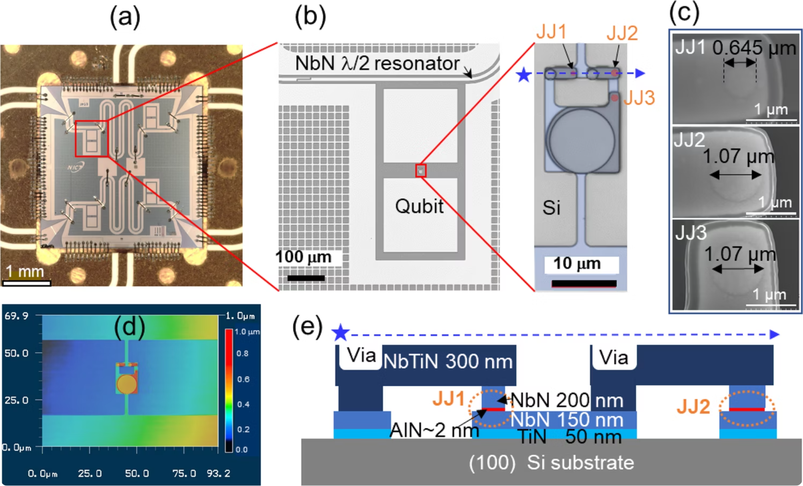
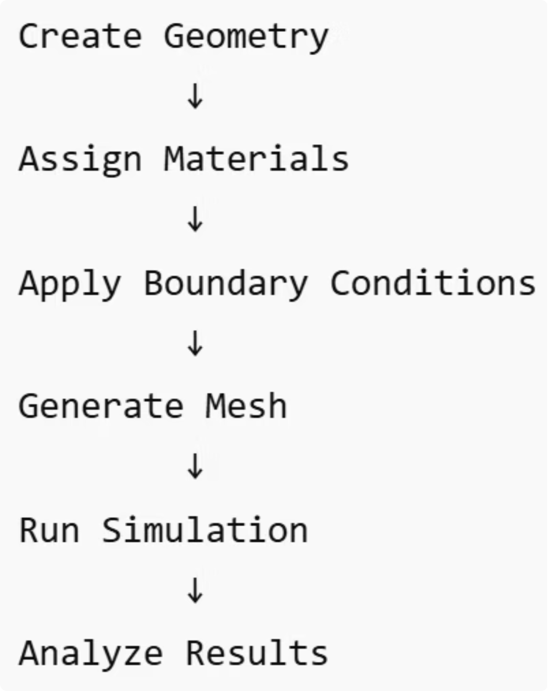
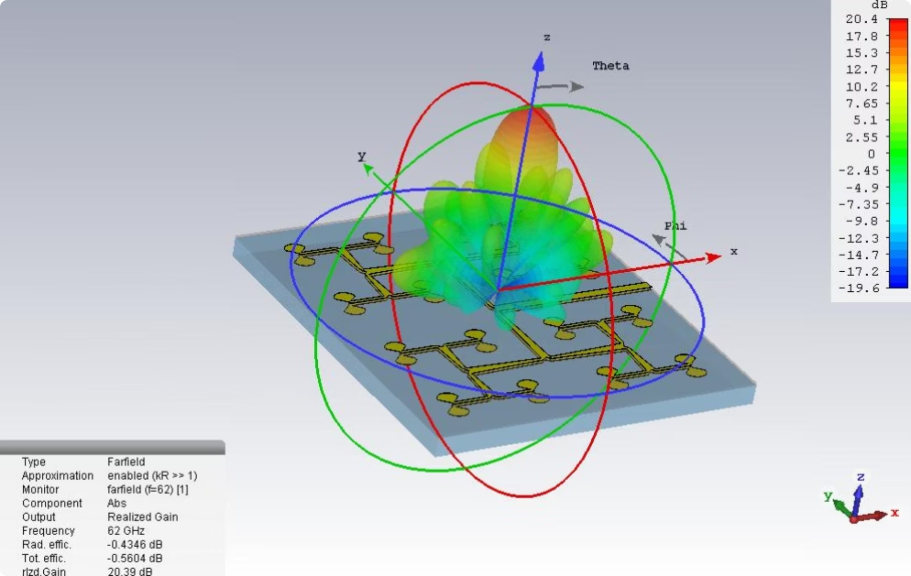
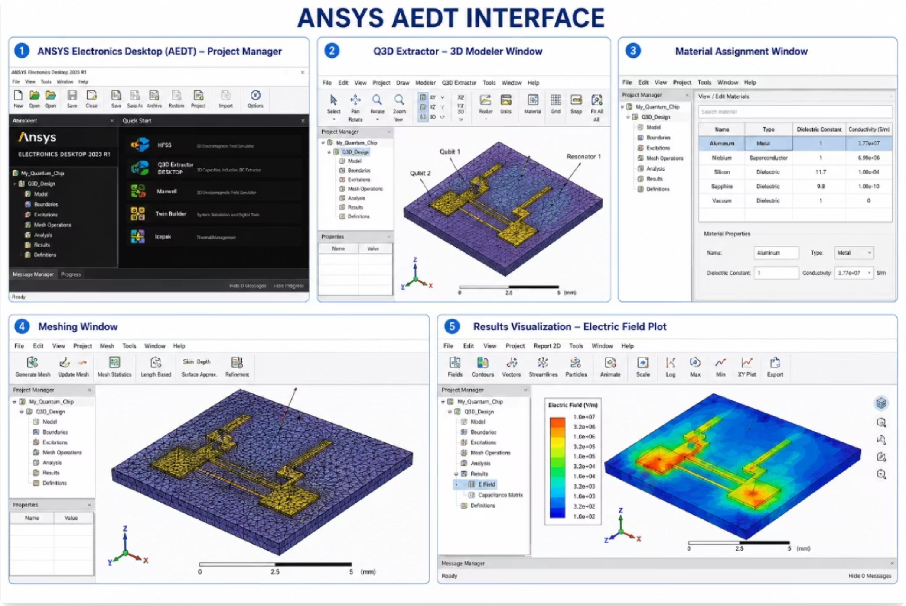
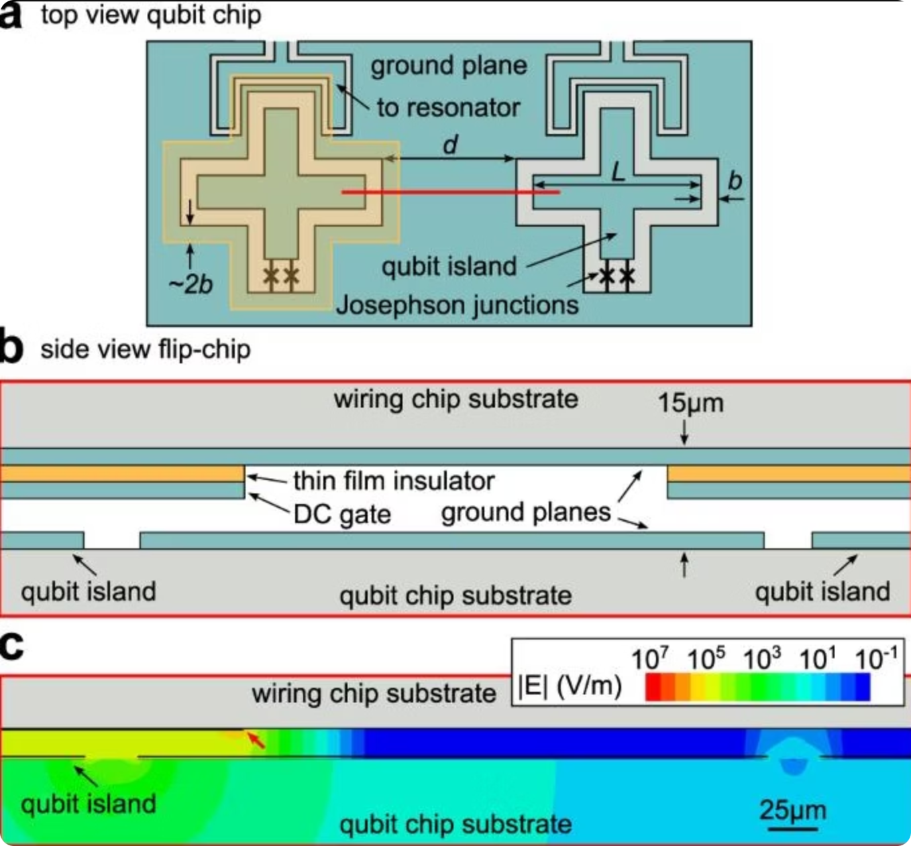
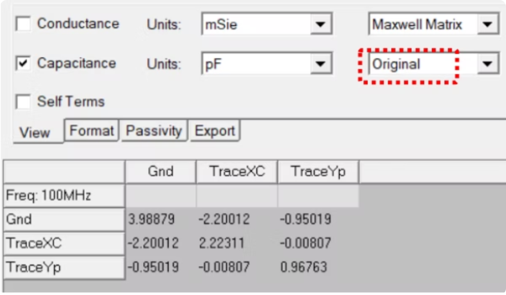
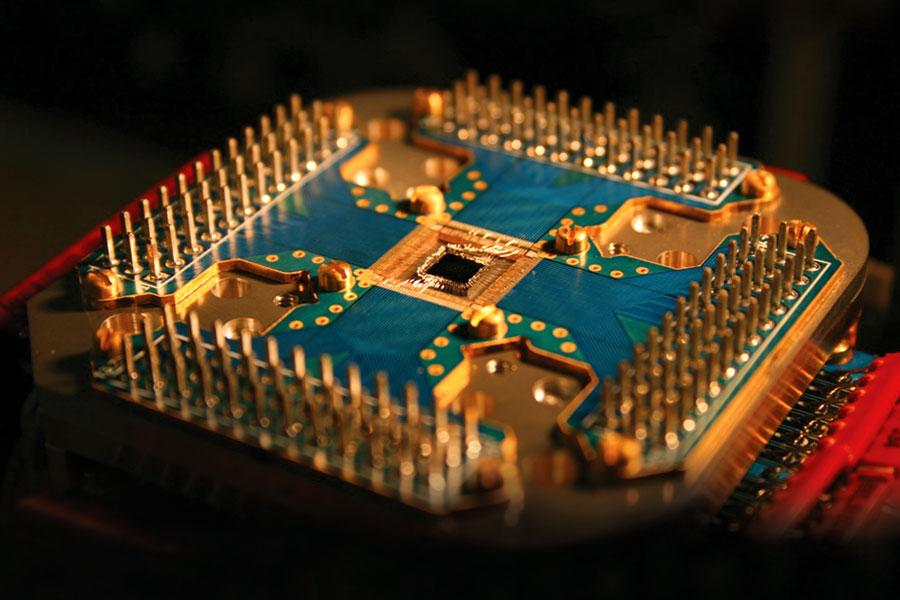
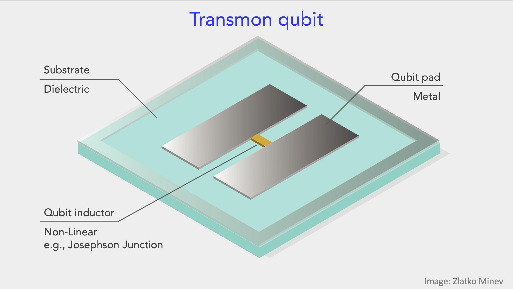
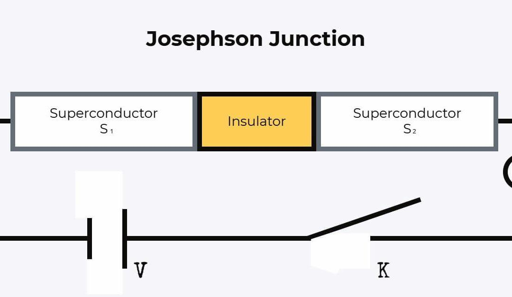

QClang Development Documentation
Starter documentation for QClang language development.
QClang is the project language for describing superconducting quantum chip designs. This documentation is a starter structure: it gives the correct documentation parameters and basic beginner content now, then it can be expanded with full implementation details after the final QClang project folder is ready.
Onboarding Tutorial
Onboarding Tutorial
This page introduces the QClang workflow from beginner level. A new user should first understand what a QClang source file represents, how it is parsed, how it becomes an internal design model, and how that model is exported to downstream chip design tools.
- Beginner: learn chip, qubit, coupler, readout, and design rule parameters.
- Intermediate: learn parse, validate, compile, and export stages.
- Advanced: connect QClang with backend APIs, design graph, routing, DRC, and exports.
Beginner
Hello World
A first QClang example should be small. It should declare one chip and a few hardware objects so the reader can see the shape of the language before learning advanced blocks.
hello.qc
chip HelloChip
variable substrate = "silicon"
variable metal = "aluminum"
qubit Q1 type=transmon frequency=5.0
readout RO_Q1 connect(Q1)
end
What this example introduces
Chip metadata, a single qubit, and a readout object connected to that qubit.
Setup
Installation
The final installation page should explain how to prepare the QClang development environment. At starter level, document the expected backend folder, Python environment, and where the QClang compiler package is located.
Development
Using Python and QClang
Python is used to expose QClang compiler functions through backend services. This section should explain the normal developer flow: load source text, parse it, validate it, compile it, and return a structured response.
Conceptual flow
source = read_qclang_file("design.qc")
ast = parse(source)
validation = validate(ast)
result = compile(ast, target="json_ir")User Guide
User Guide
The user guide should teach how QClang fits into the full quantum chip design workflow. It should stay practical: what users write, what the compiler reads, and what the backend returns.
Write
Create QClang source with chip, qubit, coupler, and readout declarations.
Validate
Check structure, references, units, and design constraints.
Compile
Generate design output for JSON inspection or chip design tooling.
Overview Tutorial
QClang Overview Tutorial
QClang is a small domain language for quantum chip design. It should describe a design in a readable way, then let the compiler convert that design into structured outputs.
- Source language: the user-facing chip description.
- AST: the internal parsed representation.
- Design graph: the shared structure used by routing, DRC, and exports.
- Generated output: the result returned to the frontend or saved as artifacts.
Syntax
Syntax Tutorial - Part 1
Start syntax documentation with the common block pattern. Do not overload beginners with every final rule. Introduce only names, variables, declarations, and connections.
Declarations
Use declarations for chip, qubit, coupler, readout, feedline, and launchpad objects.
Properties
Use properties for frequency, material, topology, chip size, spacing, and routing options.
Syntax
Syntax Tutorial - Part 2
The second syntax page can introduce larger design parameters such as topology, arrays, rule blocks, and output targets. When the final compiler is complete, this page should be expanded with the exact grammar.
Language Reference
Language Blocks
This reference page lists the parameters that the final QClang language documentation should contain. The current content is basic by design and can be replaced with exact definitions after the final language implementation is complete.
chip
Defines global design metadata such as name, substrate, metal, topology, and chip size.
qubit
Defines a quantum device node, usually with type, frequency, placement, and group parameters.
coupler
Defines a connection between two qubits and optional coupling strength.
readout
Defines readout resonator objects connected to target qubits.
feedline
Defines the shared microwave route that connects readout components.
launchpad
Defines chip input/output access points for routing and exports.
Compiler Reference
Compiler Pipeline
The compiler reference should explain each internal stage without treating current development issues as documentation content. Keep this as a clean parameter list until the final implementation is ready.
| Stage | Purpose | Expected output |
|---|---|---|
| Lexer | Reads source characters and creates tokens. | Token stream |
| Parser | Builds the abstract syntax tree from tokens. | AST |
| Validator | Checks structure, references, and required fields. | Validation report |
| Compiler | Converts the parsed design into backend-ready output. | Generated result |
| Full dialect | Supports extended .qcl features such as braces, arrays, and export targets. | JSON IR, SPICE, or Metal code |
Design Rules
Design Rules
QClang documentation should include design rule parameters so users understand what the compiler or design pipeline may check later.
Geometry rules
Spacing, overlap, off-chip placement, and route collision checks.
Frequency rules
Qubit frequency spacing, readout separation, and collision avoidance.
Fabrication rules
Minimum widths, clearances, material assumptions, and process constraints.
Connectivity rules
Qubit-coupler-readout consistency and missing connection checks.
Compilation Targets
Compilation Targets
Targets describe where QClang output should go. In the final documentation, each target can include exact request/response examples and screenshots.
json_ir
Structured intermediate representation for debugging and frontend inspection.
qiskit_metal
Python code intended for quantum chip component generation workflows.
spice
SPICE-style text for circuit-level representation.
exports
Project exports such as QClang source, JSON, SVG, GDS, DXF, and reports.
Chip Synthesis
Chip Synthesis
Chip synthesis documentation should explain how QClang source becomes a design graph, then goes through placement, frequency planning, routing, DRC, and export generation.
Constraints
Collect chip size, substrate, topology, metal, and qubit count.
Graph
Create a design graph with qubits, couplers, readouts, feedlines, and launchpads.
Export
Return generated artifacts for the user interface and downstream tooling.
Chip Synthesis
Superconducting Materials
This page summarizes CDAC_Superconducting_Materials.pptx for QClang documentation. Use it to understand the material families that a superconducting quantum-chip design flow must describe before layout, fabrication, HFSS simulation, Q3D extraction, and EPR/scQubits analysis.
Learning goal
Superconducting quantum circuits require carefully selected materials across three functional layers: Each slide covers one material: Role · Properties · Critical Temperature · Importance for qubit coherence
Superconducting Materials
Aluminum (Al)
The Workhorse of Superconducting Qubits
Tc = 1.2 K
Aluminum (Al)
The Workhorse of Superconducting Qubits
Role in quantum circuits
Qubit body, Josephson junction electrodes, resonators, coplanar waveguides
Why it matters
Aluminum's native oxide (AlOx) forms a reproducible ~1–2 nm tunnel barrier for Josephson junctions — the heart of every superconducting qubit. Its long coherence times and CMOS-compatible deposition make it the most widely used qubit material worldwide, adopted by IBM, Google, IQM and in C-DAC's reference facility.
Key facts
- Type I superconductor — minimal trapped flux vortices
- Naturally forms AlOx tunnel barrier (~1–2 nm thick)
- Shadow evaporation enables precise Josephson junction fabrication
- Used by IBM, Google, IQM & adopted in C-DAC reference facility
- Low decoherence from TLS defects when surface is clean
Superconducting Materials
Niobium (Nb)
High-Tc Superconductor for Resonators & Wiring
Tc = 9.3 K
Niobium (Nb)
High-Tc Superconductor for Resonators & Wiring
Role in quantum circuits
Microwave resonators, transmission lines, ground planes, multi-layer wiring
Why it matters
Niobium's higher critical temperature gives a wider thermal margin. It is the material of choice for resonators and readout structures in high-qubit-count processors. Sputter-deposited as thin films, it enables scalable multi-layer chip architectures essential for 50–100 qubit systems like those in C-DAC's program.
Key facts
- Type II superconductor — operates well in moderate magnetic fields
- Widely used in SRF (superconducting radio-frequency) cavities
- Preferred for multi-layer, high-qubit-count chip stacks
- Sputter-deposited as thin films on Si or sapphire wafers
- Critical for scalable quantum processor architectures
Superconducting Materials
Silicon (Si) Substrate
The Foundation of Most Quantum Chips
Non-superconducting — dielectric substrate
Silicon (Si) Substrate
The Foundation of Most Quantum Chips
Role in quantum circuits
Substrate / foundation for depositing superconducting thin films and qubit circuits
Why it matters
High-resistivity intrinsic silicon is the most common substrate because semiconductor fabrication techniques are directly compatible. It enables patterning of qubits using electron-beam and optical lithography at scale. C-DAC's reference facility uses silicon wafers for double-sided qubit chip fabrication.
Key facts
- Dielectric constant ~11.7; extremely well-characterised
- Float-zone (intrinsic) Si has very low impurity levels
- Compatible with standard cleanroom microfabrication tools
- Loss tangent must be carefully managed at millikelvin temperatures
- Used in double-sided 3-inch wafer fabrication at C-DAC partner labs
Superconducting Materials
Sapphire (Al₂O₃) Substrate
Ultra-Low-Loss Substrate for High-Coherence Qubits
Non-superconducting — crystalline dielectric
Sapphire (Al₂O₃) Substrate
Ultra-Low-Loss Substrate for High-Coherence Qubits
Role in quantum circuits
Low-loss substrate for high-coherence qubit circuits; alternative to silicon
Why it matters
Sapphire offers extremely low dielectric loss and a very clean surface, resulting in longer qubit coherence times (T1, T2). It is used in state-of-the-art processors where maximising coherence is critical. Google's Sycamore processor uses sapphire substrates.
Key facts
- Dielectric constant ~9–10; very low loss tangent
- Single-crystal c-plane (0001) orientation preferred
- Cleaner surfaces reduce two-level system (TLS) defects
- Used in Google's Sycamore and many research-grade qubits globally
- Higher cost than silicon but delivers superior coherence times
Superconducting Materials
Titanium Nitride (TiN)
High Kinetic Inductance Superconductor
Tc = 4–5.6 K (tunable)
Titanium Nitride (TiN)
High Kinetic Inductance Superconductor
Role in quantum circuits
Kinetic inductance detectors (KIDs), high-impedance resonators, superconducting inductors
Why it matters
TiN has a large kinetic inductance arising from its high normal-state resistivity. This makes it ideal for compact high-impedance resonators and microwave kinetic inductance detectors (MKIDs). Its Tc is tunable by adjusting nitrogen content during reactive sputtering deposition.
Key facts
- High kinetic inductance — enables compact circuit elements
- Tc tunable via N₂ partial pressure during sputtering deposition
- Hard, chemically stable coating — easy to pattern by etching
- Used in microwave kinetic inductance detectors (MKIDs)
- Studied at C-DAC partner labs for next-generation qubit designs
Superconducting Materials
Niobium Nitride (NbN)
High-Tc Nitride for Photon Detection & Qubits
Tc = 16 K (bulk); ~10 K thin film
Niobium Nitride (NbN)
High-Tc Nitride for Photon Detection & Qubits
Role in quantum circuits
Superconducting nanowire single-photon detectors (SNSPDs), resonators, qubit circuits
Why it matters
NbN has the highest Tc among common superconducting nitrides and is prized for single-photon detection at near-infrared wavelengths. Its large superconducting gap makes it resistant to quasiparticle poisoning — a key decoherence mechanism in qubit circuits used in quantum networking nodes.
Key facts
- Highest Tc among common nitrides — operable at 4 K with standard cryostats
- Used in SNSPDs for quantum communication & networking links
- Large superconducting gap reduces quasiparticle poisoning
- Deposited by reactive magnetron sputtering on MgO or sapphire
- Integrated into quantum networking nodes alongside transmon qubits
Superconducting Materials
Niobium Titanium Nitride (NbTiN)
Optimised Alloy for Low-Loss Microwave Circuits
Tc ≈ 15 K
Niobium Titanium Nitride (NbTiN)
Optimised Alloy for Low-Loss Microwave Circuits
Role in quantum circuits
High-Q microwave resonators, MKID arrays, qubit coupling elements, SQUIDs
Why it matters
NbTiN combines the high Tc of NbN with improved thin-film uniformity and magnetic field resilience. It is widely used for microwave resonators requiring both high quality factor (Q) and resilience to in-plane magnetic fields, making it superior for large-scale qubit arrays and flux-tunable designs.
Key facts
- Higher Q resonators compared to plain Nb films
- Resilient to in-plane magnetic fields — ideal for fluxonium qubits
- Excellent film uniformity over large (4-inch+) wafers
- Critical for SQUIDs and superconducting interference devices
- Adopted in European quantum platforms (QuTech, IQM) and C-DAC partners
Superconducting Materials
Aluminum Oxide (AlOx) Tunnel Barrier
The Quantum Tunneling Element — Heart of the Josephson Junction
Non-superconducting amorphous dielectric (~1–3 nm)
Aluminum Oxide (AlOx) Tunnel Barrier
The Quantum Tunneling Element — Heart of the Josephson Junction
Role in quantum circuits
Insulating tunnel barrier in Al/AlOx/Al Josephson junctions — defines qubit nonlinearity
Why it matters
The AlOx tunnel barrier is the most critical element in superconducting qubits. Formed by controlled thermal oxidation of aluminum, it creates a ~1–2 nm amorphous oxide through which Cooper pairs tunnel, producing the non-linear inductance that makes a qubit distinct from a classical LC oscillator.
Key facts
- Formed by controlled O₂ exposure of Al surface (thermal oxidation)
- Thickness (~1–2 nm) sets the critical current Ic of the junction
- Amorphous structure introduces TLS defects — primary decoherence source
- Shadow-angle evaporation produces self-aligned Josephson junctions
- Active C-DAC research: cleaner barriers to extend T1 coherence times
Superconducting Materials
Molybdenum Rhenium (MoRe)
Emerging Alloy for Resilient Qubit Circuits
Tc ≈ 9–14 K (varies with Re content)
Molybdenum Rhenium (MoRe)
Emerging Alloy for Resilient Qubit Circuits
Role in quantum circuits
Josephson junction electrodes, qubit wiring in magnetic-field-tolerant and hybrid designs
Why it matters
MoRe alloys offer a tunable Tc and are highly compatible with silicon nanofabrication processes. They are being explored for qubit designs that must tolerate small magnetic fields, including topological qubit experiments using Majorana zero modes in semiconductor-superconductor hybrid systems.
Key facts
- Tc tunable by adjusting the Mo:Re ratio during co-sputtering
- Compatible with semiconductor (Si) foundry fabrication processes
- Used in hybrid semiconductor-superconductor qubit devices
- Explored for Majorana-based topological qubit research (Microsoft)
- Under evaluation at leading quantum labs and C-DAC ecosystem partners
Superconducting Materials
Indium (In) Bump Bonds
Superconducting 3D Integration for Scalable Processors
Tc = 3.4 K
Indium (In) Bump Bonds
Superconducting 3D Integration for Scalable Processors
Role in quantum circuits
Flip-chip indium bump bonds for 3D multi-chip quantum processor stacking
Why it matters
Indium is soft and ductile, making it ideal for superconducting bump bonds that connect multiple quantum chips in a 3D flip-chip stack. This technique, pioneered by Google and IBM, enables qubit chips and control chips to be connected with low-loss superconducting contacts, crucial for scaling beyond 100 qubits.
Key facts
- Low melting point (157°C) — compatible with quantum chip processing
- Soft metal: forms reliable superconducting bump bonds under low pressure
- Superconducting at 3.4 K — well below qubit operating temperature (~15 mK)
- Enables scalable 3D quantum processor stacking architectures
- Evaluated for C-DAC reference facility 50–100 qubit multi-chip modules
Superconducting Materials
Materials Summary
Quick comparison table from CDAC_Superconducting_Materials.pptx.
| Material | Type | Tc | Primary Use |
|---|---|---|---|
| Aluminum (Al) | Superconductor | 1.2 K | Qubit body, JJ electrodes |
| Niobium (Nb) | Superconductor | 9.3 K | Resonators, wiring layers |
| Silicon (Si) | Substrate | — | Qubit chip foundation |
| Sapphire (Al₂O₃) | Substrate | — | High-coherence substrate |
| Titanium Nitride (TiN) | Compound SC | 4–5.6 K | High-kinetic-inductance elements |
| Niobium Nitride (NbN) | Compound SC | 16 K | SNSPDs, resonators |
| NbTiN | Compound SC | 15 K | High-Q resonators, SQUIDs |
| AlOx (tunnel barrier) | Dielectric | — | Josephson junction tunnel barrier |
| MoRe alloy | Superconductor | 9–14 K | Hybrid / topological qubits |
| Indium (In) | Superconductor | 3.4 K | 3D flip-chip bump bonds |
Synthesis Tutorial
Synthesis Tutorial
This tutorial page should explain the high-level synthesis path using safe starter content: source input, constraint extraction, graph generation, routing, and export.
Future update
After the final QClang folder is complete, replace this starter text with exact examples from the working compiler.
HFSS Tutorial
HFSS Electromagnetic Simulation
HFSS is a full-wave 3D electromagnetic field solver used to test and analyze RF, microwave, antenna, and superconducting quantum circuit designs before manufacturing. In the QClang documentation, place this tutorial after chip synthesis because the synthesized chip geometry becomes the input for electromagnetic simulation.



Q3D Analysis Tutorial
Q3D Extractor Analysis
Q3D analysis belongs after HFSS in the documentation because it explains how a quantum chip layout is converted into electrical interaction values. Q3D helps analyze capacitance, coupling, electric field strength, and unwanted interaction before fabrication.

- Quantum chip layout: start from qubits, resonators, readout lines, control lines, and ground plane.
- Import into AEDT: bring the geometry into ANSYS Electronics Desktop.
- Open Q3D Extractor: analyze electrical interactions between physical structures.
- Assign materials: apply aluminum, silicon, sapphire, niobium, or project-specific materials.
- Generate mesh: divide the structure into small elements for calculation accuracy.
- Calculate fields: inspect electric field strength, direction, and energy concentration.
- Extract capacitance matrix: convert physical geometry into electrical information.


How to explain color fields
Red or yellow means strong electric field, green means medium field, and blue means weak field.
EPR / scQubits Tutorial
EPR Analysis in Superconducting Quantum Circuits
EPR means Energy Participation Ratio. It explains what percentage of total electromagnetic energy is stored in each circuit component. In QClang documentation, place EPR after HFSS and Q3D because EPR converts field simulation information into quantum parameters such as qubit frequency, anharmonicity, coupling strength, and Kerr effects.



Simulation Dashboard Tutorial
Simulation Dashboard Parameters
This tutorial describes where the simulation screens from the provided images should live. In the final QClang documentation, add screenshots here showing HFSS eigenmode simulation, model tree, material layers, object properties, field visualization, mesh settings, and progress status.
HFSS Eigenmode Simulation
Document the 3D model view, setup tabs, logs, results, files, progress bar, and solver status.
Model Tree
Explain substrate, metal layers, qubits, couplers, readout resonators, flux lines, ports, boundaries, and excitations.
Field Visualization
Show E-field plots, color legends, frequency selection, vector display, cross section, and measurements.
Simulation List
Document total simulations, running/completed/failed counts, filters, rows, side preview, and export actions.
Results and Reports Tutorial
Results, Verification, and Reports
Place final result screenshots here. This page should explain how users read simulation outputs after HFSS and EPR/scQubits analysis: qubit frequency distribution, energy levels, coupling maps, coherence summary, verification status, artifacts, and downloadable reports.
Execution Tutorial
Execution Tutorial - Part 1
This page explains the first execution stage for QClang documentation users. After a QClang file is written and checked by the compiler, the design should be exported into simulation-ready artifacts such as JSON IR, geometry data, or electromagnetic setup files.
.qcl chip description with qubits, resonators, couplers,
ports, and constraints.
Execution Tutorial
Execution Tutorial - Part 2
This page explains the second execution stage: reading simulation outputs and connecting them back to QClang design decisions. Users should compare HFSS, Q3D, and EPR/scQubits values against the result-analysis tables.
Results Analysis
HFSS Results Analysis
HFSS results explain how the QClang-generated chip behaves electromagnetically. This page has been updated from HFSS_Quantum_Parameters (1).pptx and grouped so learners can study one simulation category at a time.
HFSS Simulation Output Parameters52 parameters grouped into 7 categories
S-Parameters & RF Performance
RF checks for matching, transmission, isolation, coupling, phase response, and standing-wave behavior.
| # | VER ID | Parameter | Severity | Design Rule / Constraint | Ideal / Optimal Value | Acceptable Range | Good | Bad | Why It Matters |
|---|---|---|---|---|---|---|---|---|---|
| 1 | HFSS-S-001 | Return Loss | Critical | S11 ≤ −20 dB at operating frequency | < −20 dB | −15 to −25 dB | < −20 dB: excellent impedance match; full power into resonator/qubit | > −10 dB: >10% power reflected; readout chain SNR degraded | Reflected power from input port. Poor return loss = impedance mismatch → signal reflections degrade qubit readout fidelity. |
| 2 | HFSS-S-002 | Insertion Loss | Critical | S21 ≥ −0.1 dB in passband | < −0.1 dB | −0.1 to −1 dB | < −0.1 dB: near-lossless transmission; signal integrity preserved | > −3 dB: half power lost; readout SNR < 3 dB, fidelity severely impacted | Signal transmission efficiency. High insertion loss reduces readout SNR, requiring higher drive power that heats the device. |
| 3 | HFSS-S-003 | Transmission |S21| | High | |S21| ≥ 0.95 (linear) in passband | ≈ 1.0 (unity) | 0.9 – 1.0 | ≥ 0.95: >90% amplitude transmission; strong coupling confirmed | < 0.5: >50% amplitude loss; readout inefficient | Linear magnitude of S21. Near-unity confirms full coupling efficiency; used in EPR extraction and resonator characterisation. |
| 4 | HFSS-S-004 | Port Isolation | High | Sij ≤ −30 dB between non-coupled ports | < −30 dB | −20 to −40 dB | < −30 dB: crosstalk negligible; simultaneous multi-qubit readout viable | > −15 dB: strong port coupling; driven rotations on idle qubits | Cross-port electromagnetic isolation. Insufficient isolation causes simultaneous readout errors and qubit–qubit cross-drive. |
| 5 | HFSS-S-005 | Forward Isolation (S12) | High | S12 ≤ −20 dB (Purcell filter context) | < −20 dB | −15 to −30 dB | < −20 dB: amplifier backaction blocked; qubit protected from output noise | > −10 dB: HEMT noise reaches qubit; excess excitation and T₁ degradation | Reverse isolation prevents HEMT amplifier noise photons from reaching qubit. Critical in Purcell filter and circulator design. |
| 6 | HFSS-S-006 | Phase of S21 (GDD) | Medium | Group delay deviation < 1 ns across qubit bandwidth | Linear phase | < 5° deviation | Linear phase: negligible pulse distortion; gate calibration stable | Non-linear phase: pulse distortion → systematic gate errors | Non-linear phase response causes group delay dispersion that distorts shaped control pulses, increasing gate error. |
| 7 | HFSS-S-007 | Coupling Coefficient κ | Critical | 1 MHz ≤ κ/2π ≤ 10 MHz (readout resonator) | 1 – 5 MHz | 0.5 – 20 MHz | 1–5 MHz: fast readout (< 1 µs) with Purcell rate < 1 kHz; near quantum limit | < 0.1 MHz: readout > 10 µs; > 100 MHz: Purcell collapse of T₁ | External coupling rate of readout resonator. Sets fundamental trade-off between measurement speed and Purcell-induced qubit decay. |
| 8 | HFSS-S-008 | VSWR | Medium | VSWR ≤ 1.1 : 1 at operating frequency | < 1.1 : 1 | 1.1 – 1.5 : 1 | < 1.1:1: >99% power transfer; standing waves negligible | > 2.0:1: standing waves cause frequency-dependent errors | Voltage standing wave ratio quantifies impedance mismatch. High VSWR degrades power delivery to qubit and readout resonator. |
Resonator & Cavity Parameters
Resonator and cavity checks that control readout speed, coupling, Q factors, impedance, and frequency placement.
| # | VER ID | Parameter | Severity | Design Rule / Constraint | Ideal / Optimal Value | Acceptable Range | Good | Bad | Why It Matters |
|---|---|---|---|---|---|---|---|---|---|
| 9 | HFSS-R-001 | Resonant Frequency f₀ | Critical | 4.0 GHz ≤ f₀ ≤ 8.0 GHz; detuned ≥ 300 MHz from qubit | 5 – 7 GHz | 4 – 8 GHz | 5–7 GHz: low thermal photon occupancy; standard coax hardware | < 1 GHz: thermal excitation; > 15 GHz: lossy substrate | Resonator frequency sets readout photon energy, hardware requirements, and Purcell rate via qubit–resonator detuning. |
| 10 | HFSS-R-002 | Loaded Q (Q_L) | Critical | Q_L ~ 5,000–20,000 (readout); > 10⁶ (memory) | 5,000 – 20,000 | 1,000 – 50,000 | 5k–20k: readout BW 250–1000 kHz; fast measurement with acceptable Purcell | < 500: too leaky; rapid Purcell decay; > 10⁶ readout: extremely slow | Loaded Q determines readout bandwidth κ = ω₀/Q_L. Governs measurement time and Purcell-limited qubit T₁. |
| 11 | HFSS-R-003 | Internal Q (Q_i) | Critical | Q_i ≥ 10⁵ (2D planar); ≥ 10⁷ (3D cavity) | > 10⁶ | 10⁵ – 10⁷ | > 10⁶: resonator loss << Purcell loss; qubit T₁ not resonator-limited | < 10⁴: resonator dominates T₁ budget; unacceptable in planar SC circuits | Internal Q reflects intrinsic material, TLS, and vortex losses in resonator walls. Sets upper limit on qubit T₁ via Purcell. |
| 12 | HFSS-R-004 | External Q (Q_e) | High | Q_e ~ 2,000 – 50,000 (readout) | 2,000 – 20,000 | 500 – 100,000 | 2k–20k: controllable readout rate; Purcell rate < qubit decay rate | < 100: over-coupled; Purcell T₁ < 1 µs; > 10⁶: under-coupled | External Q sets coupling to transmission line. With Q_i >> Q_e (over-coupled), resonator is readout-limited not loss-limited. |
| 13 | HFSS-R-005 | Coupling Strength g | Critical | 50 MHz ≤ g/2π ≤ 200 MHz (strong coupling) | 50 – 150 MHz | 10 – 300 MHz | 50–150 MHz: well in strong coupling; g/κ > 10 and g/γ > 10 confirmed | < 1 MHz: weak coupling; cQED regime not achieved; readout fidelity < 90% | Qubit–resonator coupling. Strong coupling (g >> κ, γ) is fundamental requirement for circuit QED dispersive readout. |
| 14 | HFSS-R-006 | Dispersive Shift χ | Critical | 0.5 MHz ≤ |χ|/2π ≤ 10 MHz | 1 – 5 MHz | 0.1 – 20 MHz | 1–5 MHz: large IQ-plane separation; high-fidelity single-shot readout | < 0.01 MHz: states indistinguishable; > 50 MHz: photon-induced dephasing | State-dependent resonator frequency shift enables QND readout. χ = g²/Δ sets IQ-plane angle; drives single-shot fidelity. |
| 15 | HFSS-R-007 | Photon Decay Rate κ | High | κ/2π = 1 – 5 MHz (readout resonator) | 1 – 5 MHz | 0.1 – 20 MHz | 1–5 MHz: readout ring-up/ring-down time ~100–500 ns; compatible with 1 µs cycles | < 10 kHz: readout too slow; > 100 MHz: broad resonator; Purcell collapse | Resonator energy decay rate sets readout speed. Too small → slow readout; too large → Purcell-limited T₁. |
| 16 | HFSS-R-008 | Impedance Z₀ | Medium | Z₀ = 50 Ω ± 2 Ω (matched to coax) | 50 Ω | 45 – 55 Ω | 50 Ω ± 1 Ω: VSWR < 1.05; full power coupling, no reflections in cryo lines | < 25 Ω or > 100 Ω: VSWR > 2; large reflections; effective κ shifts from design | Characteristic impedance matching to 50 Ω coaxial environment. Mismatch reduces coupling efficiency and shifts κ from design. |
| 17 | HFSS-R-009 | Frequency Pulling Δf | Medium | Δf < 1 MHz from design target | < 0.5 MHz | < 2 MHz | < 0.5 MHz: resonator on-frequency; readout pulse pre-calibrated | > 5 MHz: readout tone off-resonance; SNR degraded; tone calibration required | Frequency shift due to coupling, fabrication tolerances, or dielectric loading. Excess pulling requires per-device calibration. |
| 18 | HFSS-R-010 | Kinetic Inductance α | Low | 0.01 ≤ α ≤ 0.3 for standard Al/Nb resonators | 0.05 – 0.2 | 0.001 – 0.5 | 0.05–0.2: moderate nonlinearity; resonator frequency stable vs power | > 0.8: strong nonlinearity; resonator bifurcates at readout photon numbers | Kinetic inductance fraction α = L_k/(L_k+L_geo). Controls resonator nonlinearity, power handling, and anharmonicity contribution. |
Electromagnetic Field Outputs
Field-solution checks for peak fields, surface/interface participation, EPR participation, and radiation quality.
| # | VER ID | Parameter | Severity | Design Rule / Constraint | Ideal / Optimal Value | Acceptable Range | Good | Bad | Why It Matters |
|---|---|---|---|---|---|---|---|---|---|
| 19 | HFSS-E-001 | Peak E-Field |E|max | High | |E|max < 10⁶ V/m at junction (single photon) | < 10⁵ V/m | < 10⁷ V/m | < 10⁵ V/m: well below oxide breakdown; TLS excitation rate suppressed | > 10⁸ V/m: dielectric breakdown risk; TLS saturation | Peak E-field at Josephson junction. High fields excite TLS defects in AlOx barrier and substrate, directly increasing T₁⁻¹. |
| 20 | HFSS-E-002 | H-Field Distribution |H| | Medium | |H| < 10³ A/m at SC surface; spatially uniform | < 500 A/m | < 5,000 A/m | < 500 A/m uniform: no vortex nucleation; surface current below pair-breaking | > 10⁵ A/m: vortex trapping in SC film; each vortex adds ~1 kHz to κ | H-field concentration at superconductor surface. Hotspots exceed H_c1 locally, nucleating Abrikosov vortices that add loss. |
| 21 | HFSS-E-003 | Interface Participation pᵢ | Critical | p_SA < 10⁻³; p_MS < 10⁻³ | < 10⁻³ | 10⁻³ – 10⁻² | < 10⁻³: interface loss contribution < 1 kHz to T₁⁻¹; T₁ > 1 ms achievable | > 10⁻¹: interface dominates all loss channels; T₁ < 10 µs | Fraction of electric field energy at lossy interface. pᵢ × tan δᵢ × ω = loss rate. Dominant predictor of TLS-limited T₁. |
| 22 | HFSS-E-004 | Surface Participation p_MA | Critical | p_MA (metal–air) < 10⁻⁴ | < 10⁻⁴ | 10⁻⁴ – 10⁻³ | < 10⁻⁴: native oxide TLS loss negligible; consistent with T₁ > 500 µs | > 10⁻²: native oxide (AlOx) TLS dominates decay; T₁ < 50 µs | Energy stored in metal–air (native oxide) interface. Key TLS loss channel in Al transmons; reduced by surface treatment. |
| 23 | HFSS-E-005 | Bulk Participation p_bulk | High | p_bulk < 10⁻² for Si/sapphire substrates | < 5×10⁻³ | 10⁻² – 5×10⁻² | < 5×10⁻³: bulk dielectric loss < 1 kHz; substrate does not limit T₁ | > 0.1: bulk dominates; even ultra-pure Si limits T₁ < 100 µs | Energy fraction in bulk substrate dielectric. Multiplied by tan δ gives bulk T₁ contribution. Minimised by geometry. |
| 24 | HFSS-E-006 | EPR (Junction EPR) | Critical | Junction EPR ≥ 0.9 for dominant mode | 0.95 – 1.0 | 0.8 – 1.0 | 0.95–1.0: junction hosts >95% inductive energy; anharmonicity and χ predicted accurately | < 0.5: junction energy shared with stray inductances; Hamiltonian extraction unreliable | Fraction of inductive energy in Josephson junction vs total. Drives EPR method for extracting dispersive shifts and decay rates. |
| 25 | HFSS-E-007 | Radiation Q (Q_rad) | High | Q_rad ≥ 10⁶ for on-chip resonators (shielded) | > 10⁶ | > 10⁵ | > 10⁶: radiation loss < 1 kHz; package design validated; Q_i not radiation-limited | < 10⁴: radiation loss dominates internal Q; chip must be redesigned | Quality factor limited by power radiated from chip. Poor shielding or slot-line modes radiate energy, reducing Q_i and T₁. |
Qubit Performance Metrics
HFSS-derived qubit checks for frequency, anharmonicity, energy scales, coherence, Purcell decay, and gate fidelity.
| # | VER ID | Parameter | Severity | Design Rule / Constraint | Ideal / Optimal Value | Acceptable Range | Good | Bad | Why It Matters |
|---|---|---|---|---|---|---|---|---|---|
| 26 | HFSS-Q-001 | Anharmonicity α | Critical | |α|/2π ≥ 150 MHz (|α| = |ω₁₂ − ω₀₁|) | −200 to −300 MHz | −100 to −500 MHz | |α| 200–300 MHz: DRAG gates < 30 ns with leakage < 0.01%; selective driving | |α| < 50 MHz: must slow gates to > 200 ns; leakage to |2⟩ > 1% | Frequency gap between 0→1 and 1→2 transitions. Must exceed pulse bandwidth for selective driving without leakage. |
| 27 | HFSS-Q-002 | Qubit Frequency f_q | Critical | 4.0 GHz ≤ f_q ≤ 6.0 GHz (transmon sweet spot) | 4 – 6 GHz | 3 – 8 GHz | 4–6 GHz: kT/hf < 0.001 at 20 mK; standard microwave hardware | < 1 GHz: thermal population > 1%; > 10 GHz: substrate loss increases | Qubit transition frequency. Must be well above thermal energy (kT/h ≈ 400 MHz at 20 mK) and away from substrate TLS resonances. |
| 28 | HFSS-Q-003 | Josephson Energy E_J | Critical | 10 GHz ≤ E_J/h ≤ 40 GHz; E_J/E_C ≥ 50 | 15 – 30 GHz | 5 – 60 GHz | 15–30 GHz: f_q on target; charge insensitive; junction reproducible within ±5% | < 1 GHz: qubit below 2 GHz; thermally excited; E_J/E_C < 10: charge sensitive | Josephson tunneling energy sets qubit frequency and E_J/E_C ratio. Extracted in HFSS via junction inductance L_J = Φ₀²/E_J. |
| 29 | HFSS-Q-004 | Charging Energy E_C | Critical | 200 MHz ≤ E_C/h ≤ 350 MHz | 200 – 350 MHz | 100 – 500 MHz | 200–350 MHz: anharmonicity ~−E_C; charge noise suppressed; qubit addressable | < 50 MHz: near-harmonic oscillator; > 1000 MHz: Cooper-pair box regime | Single-electron charging energy set by shunt capacitance. E_C = e²/2C_Σ; defines anharmonicity and charge sensitivity. |
| 30 | HFSS-Q-005 | Purcell Decay Rate γ_P | Critical | γ_P/2π < 1 kHz (without filter); < 100 Hz (with) | < 500 Hz | < 10 kHz | < 500 Hz: Purcell T₁ contribution > 2 ms; does not limit qubit T₁ budget | > 100 kHz: Purcell T₁ < 10 µs; qubit lifetime dominated by readout line | Qubit decay rate into transmission line via off-resonant resonator. γ_P = (g/Δ)²κ. Limits T₁ without Purcell filter. |
| 31 | HFSS-Q-006 | Predicted T₁ | Critical | T₁ > 100 µs (planar 2D); > 1 ms (3D cavity) | > 500 µs (3D) / > 100 µs (2D) | 50 – 500 µs | > 100 µs: supports > 1000 gate depth within coherence envelope (10 ns gates) | < 10 µs: < 100 gates within T₁; fault-tolerant computation infeasible | Predicted energy relaxation time from HFSS loss model: 1/T₁ = Σ(pᵢ × ωᵢ × tan δᵢ) + γ_Purcell + γ_radiation. |
| 32 | HFSS-Q-007 | Predicted T₂ | Critical | T₂ > 50 µs; ideally T₂ ≈ 2T₁ (pure dephasing limited) | > 100 µs | 20 – 300 µs | T₂ ≈ 2T₁: pure dephasing negligible; charge and flux noise well-suppressed | T₂ ≪ T₁: strong 1/f dephasing; substrate charge traps or flux noise dominant | Pure dephasing time. Gap between T₂ and 2T₁ quantifies 1/f noise from TLS charge noise and flux noise in junctions. |
| 33 | HFSS-Q-008 | 1Q Gate Fidelity F₁Q | Critical | F₁Q ≥ 99.9% (randomised benchmarking) | > 99.9 % | 99 – 99.99 % | > 99.9%: below surface-code fault-tolerance threshold (~99.4%); QEC viable | < 99%: error rate exceeds fault-tolerance threshold; errors cascade in QEC | Single-qubit gate fidelity estimated from T₁, T₂, anharmonicity, and leakage. Must exceed fault-tolerant threshold ~99.5%. |
| 34 | HFSS-Q-009 | 2Q Gate Fidelity F₂Q | Critical | F₂Q ≥ 99.5% (CZ or iSWAP gate) | > 99.5 % | 98 – 99.9 % | > 99.5%: viable for surface code with standard overhead; ZZ residual < 10 kHz | < 97%: excessive error rate; 2Q errors dominate total circuit error budget | Two-qubit gate fidelity. More sensitive to residual ZZ coupling, leakage, coupler calibration, and neighbouring qubit crosstalk. |
Crosstalk & Isolation
Checks for always-on ZZ, neighbour isolation, leakage, package modes, and unintended electromagnetic coupling.
| # | VER ID | Parameter | Severity | Design Rule / Constraint | Ideal / Optimal Value | Acceptable Range | Good | Bad | Why It Matters |
|---|---|---|---|---|---|---|---|---|---|
| 35 | HFSS-C-001 | ZZ Coupling ζ (idle) | Critical | ζ_ZZ/2π < 10 kHz between non-coupled pairs (idle) | < 1 kHz | 1 – 100 kHz | < 1 kHz: conditional phase < 0.01 rad in 10 µs; negligible idle ZZ error | > 1 MHz: > 1 rad conditional phase per µs; circuit depth severely limited | Always-on ZZ interaction from dispersive coupling. Even static ZZ causes phase errors that accumulate, limiting circuit depth. |
| 36 | HFSS-C-002 | Nearest Neighbour Isolation | High | S_ij (nearest neighbour) ≤ −40 dB | < −40 dB | −30 to −50 dB | < −40 dB: driven rotation on neighbour qubit < 10⁻⁴ rad during single-qubit gate | > −20 dB: significant driven rotation on neighbours; simultaneous single-qubit gates not independent | EM isolation between nearest-neighbour qubits. Insufficient isolation causes unwanted rotations during single-qubit gates. |
| 37 | HFSS-C-003 | Next-Nearest Isolation | High | S_ij (next-nearest) ≤ −60 dB | < −60 dB | −50 to −70 dB | < −60 dB: long-range crosstalk < 10⁻⁶ rad; 2D grid operation fully independent | > −40 dB: long-range coupling; frequency collisions compound with nearest-neighbour | Isolation beyond nearest neighbour. Critical for scalable multi-qubit processors; long-range EM leakage compounds errors. |
| 38 | HFSS-C-004 | Leakage to |2⟩ (L₁) | Critical | L₁ < 0.01% per gate | < 0.01 % | 0.01 – 0.1 % | < 0.01%: seepage outside qubit subspace negligible; DRAG pulse sufficient | > 1%: leakage accumulates over circuit; error correction cannot track non-qubit states | Population leaked to |2⟩ non-computational state during gates. DRAG pulses mitigate but require sufficient anharmonicity. |
| 39 | HFSS-C-005 | Spurious Mode Gap Δf_spur | High | Δf_spur ≥ 1 GHz from nearest spurious EM mode | > 1 GHz gap | 0.5 – 2 GHz gap | > 1 GHz gap: no spurious mode within pulse bandwidth; gate calibration stable | < 0.2 GHz: mode within pulse bandwidth; state leakage and parametric drive of spurious modes | Frequency distance to nearest unintended EM mode. Modes within drive bandwidth cause state leakage and gate calibration drift. |
| 40 | HFSS-C-006 | Package Mode Density | Medium | < 1 spurious package mode per GHz near qubit band | < 0.5 modes/GHz | < 5 modes/GHz | < 0.5/GHz: low probability of accidental hybridisation across 64-qubit chip | > 10/GHz: dense mode spectrum; unavoidable hybridisation; package must be redesigned | Density of package/enclosure modes near qubit frequency. High density increases probability of accidental mode hybridisation. |
Thermal & Loss Parameters
Loss and thermal checks for dielectric, conductor, substrate, TLS, radiation, and package-related dissipation.
| # | VER ID | Parameter | Severity | Design Rule / Constraint | Ideal / Optimal Value | Acceptable Range | Good | Bad | Why It Matters |
|---|---|---|---|---|---|---|---|---|---|
| 41 | HFSS-T-001 | Dielectric Loss Tangent | Critical | tan δ < 10⁻⁶ (bulk substrate, Si or Al₂O₃) | < 10⁻⁶ | 10⁻⁷ – 10⁻⁵ | < 10⁻⁶ (Si/sapphire): substrate contribution to T₁⁻¹ < 1 kHz; Q_i > 10⁶ | > 10⁻³ (SiO₂, organics): dielectric loss dominates; T₁ < 1 µs; unacceptable | Bulk dielectric loss factor. Mandates high-resistivity Si or c-plane sapphire; amorphous oxides and organics are lossy. |
| 42 | HFSS-T-002 | Surface Resistance Rs | High | Rs < 0.01 mΩ/□ at 10 mK for Al/Nb films | < 0.005 mΩ/□ | 0.001 – 0.1 mΩ/□ | < 0.005 mΩ/□: residual resistance ratio high; vortex-free film; Q_i > 10⁶ | > 1 mΩ/□: residual normal-metal loss or vortex contribution; Q_i < 10⁴ | Microwave surface resistance of superconducting film. Residual Rs from vortices, normal-metal inclusions, or granularity limits Q_i. |
| 43 | HFSS-T-003 | Dissipated Power P_sub | High | P_sub < 1 pW per qubit at design drive level | < 0.1 pW | 0.1 – 100 pW | < 0.1 pW: quasiparticle generation rate negligible; T₁ not QP-limited | > 1 nW: significant quasiparticle poisoning; T₁ collapses in µs timescale | Power deposited in substrate at millikelvin temperatures. Excess heating raises quasiparticle population, reducing T₁. |
| 44 | HFSS-T-004 | Thermal NEP | Medium | NEP < 10⁻²⁰ W/√Hz at qubit frequency (20 mK) | < 10⁻²⁰ W/√Hz | 10⁻²⁰ – 10⁻¹⁸ | < 10⁻²⁰: thermal photon occupancy n_th < 10⁻³; qubit not spuriously excited | > 10⁻¹⁶: near-classical noise floor; qubit excited multiple times per measurement cycle | Thermal noise equivalent power at qubit frequency. Drives spurious qubit excitation and sets fundamental measurement noise floor. |
| 45 | HFSS-T-005 | TLS Loss Rate 1/T₁_TLS | Critical | 1/T₁_TLS < 1 kHz (TLS contribution to decay) | < 0.5 kHz | 0.5 – 10 kHz | < 0.5 kHz: TLS loss gives T₁_TLS > 2 ms; not limiting coherence budget | > 100 kHz: TLS dominates all other T₁ channels; requires redesign | Decay rate contribution from two-level system defects at metal–substrate, metal–air, and substrate–air interfaces. |
| 46 | HFSS-T-006 | Conductor Loss α_c | Medium | α_c < 0.001 dB/m in SC resonator lines | < 0.0001 dB/m | 0.0001 – 0.1 dB/m | < 0.0001 dB/m: ohmic loss negligible vs radiation and TLS loss in SC lines | > 1 dB/m: conductor loss dominates; normal-metal sections or damaged SC film | Ohmic attenuation per unit length. Negligible in good superconductors far below Tc; dominant in normal metal or granular films. |
| 47 | HFSS-T-007 | Package Radiation Loss 1/Q_rad | High | 1/Q_rad < 10⁻⁷ (shielded package) | < 10⁻⁷ | 10⁻⁷ – 10⁻⁵ | < 10⁻⁷: radiation Q > 10⁷; package does not limit resonator or qubit Q | > 10⁻⁴: radiation loss comparable to TLS loss; package seams/vias must be redesigned | Inverse radiation Q. Power fraction radiated from chip to environment via package seams, slots, and via fields. |
Simulation Convergence Metrics
Numerical-quality checks for adaptive passes, mesh size, energy error, S-parameter convergence, and RAM use.
| # | VER ID | Parameter | Severity | Design Rule / Constraint | Ideal / Optimal Value | Acceptable Range | Good | Bad | Why It Matters |
|---|---|---|---|---|---|---|---|---|---|
| 48 | HFSS-V-001 | Delta S Convergence (ΔS) | Critical | ΔS < 0.002 (max |S-matrix change| between passes) | < 0.001 | 0.001 – 0.005 | < 0.001: S-parameters converged to 3rd decimal place; Q-factor reliable to ±1% | > 0.01: S-parameters still shifting; Q and coupling coefficients unreliable | Primary HFSS convergence criterion. Maximum change in S-parameter matrix between successive adaptive mesh refinement passes. |
| 49 | HFSS-V-002 | Adaptive Pass Count | Medium | Converge within 6 – 15 adaptive passes | 6 – 12 passes | 6 – 25 passes | 6–12 passes: efficient meshing; geometry well-suited to HFSS basis functions | > 40 passes without convergence: poorly conditioned geometry or material error; abort and review | Number of mesh refinement iterations to reach ΔS criterion. Many passes indicates difficult geometry or incorrect material setup. |
| 50 | HFSS-V-003 | Mesh Element Count | Medium | 10,000 – 500,000 tetrahedra for typical qubit geometry | 20k – 100k | 10k – 500k | 20k–100k: sufficient resolution for junction, pad, and resonator without excessive RAM | > 1,000,000: direct solver RAM > 256 GB; iterative solver with lower accuracy required | Total finite-element mesh size. Under-meshed → inaccurate fields; over-meshed → excessive compute cost and RAM. |
| 51 | HFSS-V-004 | Energy Error Δε/ε | High | Energy error < 0.5% (relative stored energy error) | < 0.2 % | 0.2 – 1 % | < 0.2%: field solution accurate; participation ratios and Q-factors reliable to < 1% | > 2%: field solution inaccurate; EPR and loss calculations may be off by > 10% | Relative error in total stored electromagnetic energy. Low energy error confirms accurate field solutions and Q-factor extraction. |
| 52 | HFSS-V-005 | Simulation RAM Usage | Low | Peak RAM < 64 GB for standard qubit simulation | < 16 GB | 16 – 64 GB | < 16 GB: fits standard workstation; direct solver; fastest and most accurate | > 128 GB: requires HPC cluster; iterative solver fallback; convergence harder | RAM required for direct matrix solver. Excess forces iterative solver with lower accuracy and convergence risk. |
HFSS Summary
Use this as the quick overview of HFSS severity and category coverage.
Results Analysis
Q3D Results Analysis
Q3D results explain the RLGC matrices, parasitic extraction values, and derived qubit metrics used after QClang creates superconducting chip geometry. This page has been updated from Q3D_Parameters_Corrected.pptx.
Q3D Corrected Parameters58 corrected parameters grouped into 11 categories
Resistance Matrix (R)
Resistance outputs describe DC and AC conductor losses. For superconducting layouts, use these values as fabrication and normal-state quality checks before low-temperature correction.
| # | Parameter | Symbol / Unit | Extraction Method | Typical Q3D Value | Ideal / Optimal | Good Range | Worst Case | Why It Matters | Key Design Note |
|---|---|---|---|---|---|---|---|---|---|
| 1 | DC Self-Resistance (R_ii) | R_ii / mΩ | DC sweep; sheet-resistance extraction | 0.5 – 5 mΩ | < 1 mΩ | 0.5 – 5 mΩ | > 50 mΩ | Ohmic loss in qubit loop raises thermal noise floor and damps resonator Q factor | Al becomes superconducting at 4K → R→0; use RₙA as fabrication quality proxy |
| 2 | AC Self-Resistance at 5–6 GHz | R_ac / mΩ | HFSS/Q3D surface impedance model | 2 – 20 mΩ | < 5 mΩ (superconducting at 4K) | 5 – 20 mΩ | > 100 mΩ | Values shown apply to normal-metal (room-temp) modeling; at cryogenic temp Al is superconducting (R→0). For non-SC segments or pre-cooldown checks, normal-metal losses degrade quality factor Q. | Skin effect sets frequency dependence: R_ac ∝ √f for bulk, ≈ R_dc for thin film < δ_s. These ranges are room-temperature references; at mK, SC Al gives R_ac → 0. |
| 3 | Mutual Resistance (R_ij) | R_ij / μΩ | Full R matrix extraction in Q3D | < 10 μΩ | ≈ 0 (no shared current path) | < 50 μΩ | > 500 μΩ | Shared resistive coupling between conductors indicates galvanic crosstalk | Non-zero R_ij reveals overlapping ground return paths; fix by isolating ground planes |
| 4 | Contact / Via Resistance | R_via / mΩ | TDR or DC 4-probe; Q3D via model | < 2 mΩ per via | < 1 mΩ (superconducting through-Si) | 1 – 5 mΩ | > 20 mΩ | Resistance at layer transitions limits Q in 3D integration and flip-chip assemblies | Critical for multi-chip modules; oxidation or poor metal contact is the main failure mode |
| 5 | Ground Plane Sheet Resistance | R_sh / mΩ/sq | 4-probe measurement; Q3D bulk conductivity input | < 0.1 mΩ/sq (Al at 4K) | < 0.1 mΩ/sq | 0.1 – 0.5 mΩ/sq | > 5 mΩ/sq | High R_sh creates inductive ground return paths and shifts mode frequencies across the chip | Perforated ground planes for vortex pinning add ~5–10 pH/sq inductance per square |
Inductance Matrix (L)
Inductance outputs connect geometry, kinetic inductance, mutual inductance, and Josephson energy used in qubit Hamiltonian extraction.
| # | Parameter | Symbol / Unit | Extraction Method | Typical Q3D Value | Ideal / Optimal | Good Range | Worst Case | Why It Matters | Key Design Note |
|---|---|---|---|---|---|---|---|---|---|
| 6 | Self-Inductance (L_ii) | L_ii / nH | Q3D magnetoquasistatic solver; pyEPR energy participation | 0.5 – 5 nH | 1 – 3 nH (target Ej/Ec ~ 50–80) | 0.5 – 5 nH | < 0.1 or > 20 nH | Sets Josephson energy Ej = Φ₀²/2L; directly determines qubit frequency f ≈ √(8EjEc)/h | L = L_geometric + L_kinetic; kinetic inductance is material-dependent (Al: ~0.1–1 pH/sq) |
| 7 | Mutual Inductance (M_ij) | M_ij / pH | Q3D off-diagonal L matrix extraction | 1 – 50 pH | < 5 pH (idle qubits) | 5 – 50 pH | > 500 pH | Magnetically coupled flux between loops drives parasitic ZZ interaction and inductive crosstalk | Intentional M_ij used in flux-tunable couplers; unintentional M_ij sets residual ZZ floor |
| 8 | Geometric Inductance | L_geo / pH/μm | Q3D partial inductance extraction (PEEC) | 0.3 – 0.8 pH/μm | < 0.5 pH/μm (wide ground traces) | 0.5 – 1 pH/μm | > 2 pH/μm | Inductance from current path geometry adds to kinetic inductance to set total L and mode freq | Slot cuts in ground plane drastically increase L_geo; continuous ground plane is preferred |
| 9 | Kinetic Inductance (L_k) | L_k / pH/sq | Microwave resonator fitting; L_k = ℏ²/(π Δ e² n_s t) | 1–2 pH/sq (Al, 100–200 nm); 30–200 pH/sq (NbTiN) | < 2 pH/sq (standard Al transmon, 100–200 nm film) | 1 – 10 pH/sq | > 100 pH/sq (non-KI devices) | Inertia of Cooper pairs; provides non-linearity in KI qubits; adds to geometric L in CPW | High-L_k materials (NbTiN, TiN, NbN) used deliberately for kinetic inductance qubit designs |
| 10 | Josephson Inductance (L_J) | L_J / nH | Derived: L_J = Φ₀/(2π I_c) = Φ₀²/(2Ej); I_c from RₙA measurement | 5 – 15 nH | 8 – 12 nH (Ej/Ec ~ 50–80) | 5 – 20 nH | < 1 or > 50 nH | Non-linear inductance of JJ; L_J(φ) = L_J0/cos(φ) provides essential quantum non-linearity | L_J is the ONLY non-linear element; its ratio to shunting capacitance sets anharmonicity α |
Conductance Matrix (G)
Conductance outputs describe leakage paths, dielectric loss, and shunt conductance that can reduce resonator Q and qubit coherence.
| # | Parameter | Symbol / Unit | Extraction Method | Typical Q3D Value | Ideal / Optimal | Good Range | Worst Case | Why It Matters | Key Design Note |
|---|---|---|---|---|---|---|---|---|---|
| 11 | Self-Conductance (G_ii) | G_ii / nS | Q3D DC conductance solve | < 0.1 nS | < 0.1 nS (high-R substrate) | 0.1 – 1 nS | > 10 nS | Leakage current to ground through substrate limits resonator quality factor directly | G_ii = 1/R_leak; appears as parallel resistance Q = ω_r C_r / G in resonator model |
| 12 | Substrate Bulk Conductance | G_bulk / nS | Resistivity measurement + Q3D G matrix | < 0.01 nS | < 0.01 nS (> 10 kΩcm Si at 4K) | 0.01 – 0.5 nS | > 5 nS | Low-resistivity Si drastically degrades resonator Q; bulk conductance is the dominant channel | Use high-resistivity Si (> 10 kΩcm) or sapphire; resistivity increases >100× when cooled to 4K (carrier freeze-out; magnitude is strongly doping-dependent) |
| 13 | Surface / Interface Conductance | G_surf / nS/μm | Surface participation ratio + loss tangent fitting | < 0.001 nS/μm | < 0.001 nS/μm (clean passivated) | 0.001 – 0.05 nS/μm | > 0.1 nS/μm | Conductance along metal-air or metal-substrate interfaces is a major T₁ limitation via TLS | Adsorbed water and organic residues increase G_surf; HF dip and N₂ purge before cooldown helps |
| 14 | Mutual Conductance (G_ij) | G_ij / pS | Q3D off-diagonal G matrix extraction | < 1 pS | < 1 pS (isolated conductors) | 1 – 50 pS | > 500 pS | Leakage coupling between signal conductors via substrate surface conduction channels | Non-zero G_ij in presence of surface water or conductive substrate; fixed by surface clean or guard rings |
Capacitance Matrix (C)
Capacitance outputs are the main Q3D bridge into transmon energy, coupling, detuning, and readout design.
| # | Parameter | Symbol / Unit | Extraction Method | Typical Q3D Value | Ideal / Optimal | Good Range | Worst Case | Why It Matters | Key Design Note |
|---|---|---|---|---|---|---|---|---|---|
| 15 | Qubit Self-Capacitance (C_Σ) | C_Σ / fF | Q3D electrostatic solve; Maxwell capacitance matrix | 60 – 100 fF | 60 – 100 fF (transmon shunting) | 40 – 200 fF | < 10 fF or > 500 fF | Sets charging energy Ec = e²/2C_Σ; large C_Σ → transmon regime → exponentially reduced charge noise | C_Σ = Σ|C_ij| from Maxwell matrix; target Ej/Ec = 50–80 for optimal transmon performance |
| 16 | Readout Resonator Capacitance (C_r) | C_r / fF | Q3D capacitance matrix + HFSS eigenmode simulation | 200 – 500 fF | 200 – 500 fF (λ/4 CPW) | 100 – 600 fF | < 50 or > 1 pF | Resonator mode capacitance sets frequency: ω_r = 1/√(L_r C_r); must target 6.5–8 GHz window | Combined with Q_ext sets readout bandwidth κ = ω_r/Q_ext; trade-off between speed and SNR |
| 17 | Qubit–Resonator Coupling Cap (C_g) | C_g / fF | Q3D Maxwell matrix off-diagonal C_12 between qubit island and resonator | 1 – 10 fF | 1 – 10 fF (dispersive limit) | 0.5 – 15 fF | < 0.1 or > 50 fF | Sets coupling g = C_g/(2C_Σ)·√(ω_q ω_r/L_r C_r); must stay dispersive (g ≪ qubit–resonator detuning) | g/2π target 50–150 MHz; too large → strong coupling regime; Purcell decay ∝ (g/Δ)² × κ |
| 18 | Qubit–Qubit Coupling Cap (C_J) | C_J / fF | Q3D full capacitance matrix between qubit islands | 0.5 – 5 fF | 0.5 – 5 fF (tunable coupler) | 0.2 – 10 fF | < 0.05 or > 30 fF | Drives direct transverse coupling J; residual C_J causes always-on ZZ unless tunable coupler used | Modern heavy-hex lattice uses tunable couplers to cancel residual ZZ to < 10 kHz |
| 19 | Pad-to-Ground Parasitic Cap | C_pad / fF | Q3D with ground plane mesh | < 5 fF per pad | < 5 fF (small footprint) | 1 – 20 fF | > 50 fF | Unintended pad-to-ground capacitance shifts qubit frequency from design target | Each 1 fF of parasitic shifts f_qubit by ~10–30 MHz; critical to include in Hamiltonian model |
| 20 | Trace Mutual Capacitance (C_ij) | C_ij / fF | Q3D electrostatic solve off-diagonal extraction | < 1 fF (separated lines) | < 1 fF | 1 – 5 fF | > 20 fF | Capacitive coupling between control lines causes microwave crosstalk in drive and readout paths | Overlapping traces on adjacent layers is the primary source; add ground shield layer to suppress |
Parasitic Resistance
Parasitic resistance checks identify unwanted ohmic paths, contacts, vias, and interconnect losses before superconducting operation.
| # | Parameter | Symbol / Unit | Extraction Method | Typical Q3D Value | Ideal / Optimal | Good Range | Worst Case | Why It Matters | Key Design Note |
|---|---|---|---|---|---|---|---|---|---|
| 21 | Series JJ Parasitic Resistance | R_ser / Ω | RF impedance spectroscopy; Q3D lead model | < 0.01 Ω | < 0.01 Ω (clean superconducting) | 0.01 – 0.1 Ω | > 1 Ω | Quasiparticle conductance in JJ leads causes T₁ decay via Ohmic dissipation in qubit circuit | Quasiparticle poisoning (stray radiation) transiently raises R_ser; shielding critical at mK |
| 22 | Shunt Parasitic Resistance (R_p) | R_p / kΩ | Q3D G matrix → R_p = 1/G_ii | > 1 MΩ | > 1 MΩ (effectively open) | 100 kΩ – 1 MΩ | < 10 kΩ | Parallel leakage path across qubit capacitor reduces effective Q = R_p·√(C/L) | Substrate residues from lithography are the most common cause; requires thorough O₂ plasma clean |
| 23 | Wirebond / Bump Resistance | R_wb / mΩ | 4-probe TDR; Q3D bond-wire cylinder model | < 5 mΩ per bond | < 5 mΩ | 2 – 20 mΩ | > 100 mΩ | Parasitic series resistance contributes to insertion loss and thermal noise at 4K | Au–Au thermo-compression bonds have lower and more repeatable R_wb than Al wedge bonds |
| 24 | Metal Interface Contact Resistance | R_c / mΩ | TLM structure measurement; Q3D metal stack | < 1 mΩ (clean Al–Al) | < 1 mΩ | 1 – 10 mΩ | > 50 mΩ | Interface resistance at Al–Au and Al–Nb transitions is critical in 3D integration | Native Al₂O₃ (2–4 nm) must be removed by Ar ion milling before deposition for low R_c |
Parasitic Inductance
Parasitic inductance checks identify wirebond, via, loop, and package effects that shift mode frequencies and add crosstalk.
| # | Parameter | Symbol / Unit | Extraction Method | Typical Q3D Value | Ideal / Optimal | Good Range | Worst Case | Why It Matters | Key Design Note |
|---|---|---|---|---|---|---|---|---|---|
| 25 | Wirebond / Bump Inductance | L_wb / nH | Q3D wire cylinder model; HFSS S-parameter fitting | 0.5 – 2 nH per bond | < 1 nH | 0.3 – 3 nH | > 5 nH | Series inductance in signal path creates impedance discontinuity; resonates near operating freq | Flip-chip indium bumps reduce L_wb to ~0.1 nH vs 1–2 nH for wirebonds; key for 3D scaling |
| 26 | Control Line Lead Inductance | L_lead / pH | Q3D PEEC; partial inductance extraction | < 100 pH | < 100 pH (short on-chip) | 50 – 500 pH | > 2 nH | Lead inductance in flux/charge bias lines causes AC flux errors and qubit frequency shifts | Long coax from room-temperature electronics adds 1–10 nH; de-embed by careful calibration |
| 27 | Ground Plane Slot Inductance | L_slot / pH/sq | Q3D mesh simulation of ground plane geometry | < 1 pH/sq | < 1 pH/sq (continuous ground) | 1 – 5 pH/sq | > 20 pH/sq | Inductance from ground return path gaps distorts mode frequencies across the chip | Vortex-pinning holes (diameter ~ 1 μm, pitch ~ 2 μm) add ~5–10 pH/sq but are necessary at B > 0 |
| 28 | Package / Board Parasitic Inductance | L_pkg / nH | HFSS full package model + Q3D trace extraction | < 0.5 nH (SMA launch) | < 0.5 nH | 0.5 – 2 nH | > 5 nH | Package inductance shifts resonator input impedance; must be de-embedded from measurement | Surface-mount SMP connectors (< 0.3 nH) preferred over SMA (~0.5–1 nH) for cryo packages |
Parasitic Capacitance
Parasitic capacitance checks reveal unwanted coupling paths, loading, frequency shifts, and edge-field concentration.
| # | Parameter | Symbol / Unit | Extraction Method | Typical Q3D Value | Ideal / Optimal | Good Range | Worst Case | Why It Matters | Key Design Note |
|---|---|---|---|---|---|---|---|---|---|
| 29 | Trace-to-Ground Parasitic Cap | C_trace / fF/μm | Q3D electrostatic solve per-unit-length | 0.1 – 0.4 fF/μm | 0.1 – 0.4 fF/μm (50 Ω CPW) | 0.1 – 1 fF/μm | > 3 fF/μm | Distributed capacitance sets CPW characteristic impedance Z₀ = √(L/C); target 50 Ω | C' depends on gap width and substrate thickness; narrowing the gap increases C' (lowers Z₀) |
| 30 | Pad-to-Substrate Parasitic Cap | C_sub / fF | Q3D C matrix with substrate dielectric stack | < 10 fF | < 10 fF (small contact pads) | 5 – 30 fF | > 100 fF | Substrate capacitance creates parasitic shunt path reducing resonator Q and shifting qubit freq | Thinning substrate from 500 μm to 200 μm reduces C_sub by ~2.5×; used in IBM 3D chip stacks |
| 31 | Inter-Layer Cap (3D integration) | C_layer / fF | Q3D 3D stack model; bump height geometry sweep | < 5 fF per crossing | < 5 fF (flip-chip bump) | 1 – 20 fF | > 50 fF | Capacitance between chip layers through indium/SnAg bumps must be included in Hamiltonian | Bump height variation (σ ~ 1–2 μm) causes C_layer spread of ~0.5–1 fF; matters at scale |
| 32 | Fringe Capacitance (gap edges) | C_fringe / fF/μm | Q3D conformal mesh at conductor edges | 0.02 – 0.1 fF/μm | 0.02 – 0.1 fF/μm (5–20 μm gap) | 0.05 – 0.5 fF/μm | > 1 fF/μm | Fringe fields at edges add to intended coupling capacitance; must be in C_g design model | ~30–50% of C_g in typical transmon designs comes from fringe; underestimating shifts f by 50+ MHz |
| 33 | Wirebond Pad Parasitic Cap | C_pad_wb / fF | Q3D parallel-plate + fringe approximation; or analytical C = ε₀ εr A/d | < 50 fF (100×100 μm Al pad) | < 50 fF | 20 – 150 fF | > 300 fF | Bond-pad capacitance loads the signal line; degrades bandwidth and causes reflection at bond | Reducing pad size from 150×150 μm to 80×80 μm cuts C_pad by ~2.5× with no bond yield penalty |
Electromagnetic Coupling
Coupling outputs connect Q3D extraction to qubit-qubit, qubit-resonator, and package-mode interactions.
| # | Parameter | Symbol / Unit | Extraction Method | Typical Q3D Value | Ideal / Optimal | Good Range | Worst Case | Why It Matters | Key Design Note |
|---|---|---|---|---|---|---|---|---|---|
| 34 | External Quality Factor (Q_ext) | Q_ext | HFSS eigenmode + Q3D coupling capacitance extraction | 10³ – 10⁵ | 5×10³ – 2×10⁴ (dispersive readout) | 10³ – 10⁵ | < 500 or > 10⁶ | Sets readout bandwidth κ = ω_r/Q_ext and Purcell loss rate; undercoupled → slow; overcoupled → Purcell | Purcell limit: T₁_Purcell = Q_ext/ω_r × (Δ/g)²; Purcell filter relaxes this trade-off |
| 35 | Internal Quality Factor (Q_int) | Q_int | VNA transmission measurement; HFSS loss tangent input | > 10⁶ (planar Al at 4K) | > 10⁶ | 10⁵ – 10⁶ | < 10⁴ | Intrinsic resonator loss from TLS, dielectric, radiation; directly sets T₁ floor via Purcell | Q_int > 10⁶ requires: HR-Si or sapphire substrate, clean metal deposition, minimal surface TLS |
| 36 | Loaded Quality Factor (Q_L) | Q_L | 1/Q_L = 1/Q_int + 1/Q_ext; VNA S21 Lorentzian fit | 10³ – 10⁴ | 10³ – 10⁴ (balanced readout) | 500 – 2×10⁴ | < 200 or > 10⁵ | Determines resonator 3 dB bandwidth; BW = f_r/Q_L sets speed vs SNR tradeoff for readout | In practice Q_L ≈ Q_ext when Q_int >> Q_ext (under-coupled limit is common design choice) |
| 37 | CPW Characteristic Impedance (Z₀) | Z₀ / Ω | Q3D RLGC → Z₀ = √(L'/C'); verified by HFSS S11 calibration | 50 Ω ± 1 Ω | 50 Ω ± 1 Ω | 45 – 55 Ω | < 30 or > 80 Ω | Impedance mismatch causes reflections degrading signal integrity; Z₀ controlled by trace/gap ratio | On 500 μm Si: 10 μm trace / 6 μm gap → Z₀ ≈ 50 Ω; wider trace → lower Z₀ |
| 38 | Effective Permittivity (ε_eff) | ε_eff | Q3D electrostatic fill factor calculation; HFSS eigenmode | 6.0 – 6.5 (CPW on Si) | 6.0 – 6.5 | 5.5 – 7.0 | < 4 or > 9 | Sets propagation velocity v_ph = c/√ε_eff and resonator physical length for target frequency | ε_eff depends on substrate filling fraction; ε_eff ≈ (1 + εr)/2 for CPW in air on substrate |
| 39 | Coupling Coefficient k² | k² / ×10⁻³ | Q3D capacitance ratio k² = C_g² / (C_1 × C_2) | 1 – 10 ×10⁻³ | 1 – 10 ×10⁻³ | 0.5 – 20 ×10⁻³ | < 0.1 or > 50 ×10⁻³ | Power transfer efficiency between resonator and feedline; determines Q_ext directly | k² ∝ gap width at coupling capacitor; etch depth variation of 0.1 μm → δk²/k² ~ 5% |
Substrate & Dielectric Loss
Substrate and dielectric-loss outputs explain how material selection and surface participation affect T1.
| # | Parameter | Symbol / Unit | Extraction Method | Typical Q3D Value | Ideal / Optimal | Good Range | Worst Case | Why It Matters | Key Design Note |
|---|---|---|---|---|---|---|---|---|---|
| 40 | Substrate Bulk Loss Tangent | tan δ_bulk | Q3D dielectric loss tangent input; resonator Q fitting vs power | < 10⁻⁶ (HR-Si, 4K) | < 10⁻⁶ | 10⁻⁶ – 10⁻⁵ | > 10⁻⁴ | Bulk dielectric loss sets floor on 1/Q_int from substrate volume; sapphire < 5×10⁻⁷ | tan δ improves by 10–100× on cooling from 300K to 4K due to reduced phonon and TLS population |
| 41 | Metal-Air Interface Loss (tan δ_MA) | tan δ_MA | Surface participation ratio (SPR) from Q3D E-field + measured Q factor | ~10⁻³ | < 10⁻³ (passivated Al₂O₃) | 10⁻³ – 5×10⁻³ | > 10⁻² | TLS loss at metal-air interface is the dominant T₁ source in planar transmon designs | Etching native oxide before Al deposition reduces tan δ_MA by up to 10×; HF vapor clean |
| 42 | Substrate-Air Interface Loss (tan δ_SA) | tan δ_SA | SPR analysis from Q3D E-field distribution | ~5×10⁻⁴ | < 5×10⁻⁴ (HF-etched Si) | 5×10⁻⁴ – 5×10⁻³ | > 10⁻² | TLS at substrate exposed surface; addressed by passivation, UV ozone clean, or dry etching | Hydrogen-passivated Si surface (HF dip) shows 5× lower tan δ_SA vs untreated Si |
| 43 | Metal-Substrate Interface Loss (tan δ_MS) | tan δ_MS | EELS/TEM interface composition + Q3D SPR calculation | ~5×10⁻³ | < 5×10⁻³ | 5×10⁻³ – 10⁻² | > 5×10⁻² | TLS at Al–Si or Nb–Si interface; reduced by HF dip substrate prep before metal deposition | Amorphous interfacial SiOx layer of 1–2 nm is the primary TLS host; substrate HF clean removes it |
| 44 | Surface Participation Ratio (SPR) | p_MA / ppm | Q3D E-field energy integral on metal-air interface: p = ∫_MA ε|E|²dV / ∫_all ε|E|²dV | 5 – 50 ppm | < 5 ppm | 5 – 50 ppm | > 200 ppm | p × tan δ contributes directly to 1/Q; minimise by thick metal, wider gap, no sharp corners. For planar transmons, p_MA can reach 100–1000 ppm without geometry optimisation. | 1/Q_TLS = Σ p_i × tan δ_i; SPR is the design lever; tan δ is the material lever. <5 ppm ideal is achievable in optimised 3D cavity or large-gap planar designs; planar CPW without optimisation may be 100–1000 ppm. |
Skin Effect & Frequency-Dependent
Frequency-dependent checks show how conductor behavior changes with microwave frequency, penetration depth, and kinetic inductance.
| # | Parameter | Symbol / Unit | Extraction Method | Typical Q3D Value | Ideal / Optimal | Good Range | Worst Case | Why It Matters | Key Design Note |
|---|---|---|---|---|---|---|---|---|---|
| 45 | Skin Depth at 5 GHz | δ_s / μm | δ_s = √(2ρ/ωμ); Q3D skin-effect mode at frequency | 0.9 μm (Al at RT) | 0.5 – 2 μm | 0.5 – 3 μm | > 5 μm (film < δ_s) | If metal thickness < δ_s entire cross-section carries current and R_ac ≈ R_dc (good for thin films) | Al at 4K is superconducting so δ_s concept replaced by London penetration depth λ_L: bulk Al ~16–55 nm; thin-film Al (50–200 nm film) typically 60–163 nm — increases as film thickness decreases |
| 46 | AC/DC Resistance Ratio | R_ac/R_dc | Q3D frequency sweep; skin-effect solver comparison at DC vs 5 GHz | 1.0 – 1.05 (thin film) | ≈ 1.0 (thin film < δ_s) | 1.0 – 2.0 | > 5 | Thin-film qubits (t ~ 100–200 nm) operate below skin-depth limit so R_ac ≈ R_dc | Normal-metal (Cu, Au) transmission lines show R_ac/R_dc ~ 3–5 at 5 GHz; use SC lines at mK |
| 47 | Propagation Constant (γ) | α / dB/m, β / rad/m | Q3D RLGC → γ = √((R+jωL)(G+jωC)) | α < 0.1 dB/m (SC CPW) | α < 0.1 dB/m; β = ω√(L'C') | α 0.1 – 1 dB/m | α > 10 dB/m | α sets transmission line attenuation; β sets phase velocity; both from RLGC per unit length | For long interconnects (> 10 mm) even 0.1 dB/m causes measurable signal loss; use SC Al/Nb |
| 48 | Phase Velocity (v_ph) | v_ph / ×10⁸ m/s | Q3D RLGC → v_ph = ω/β = 1/√(L'C') | 1.2 – 1.4 ×10⁸ m/s | 1.2 – 1.4 ×10⁸ m/s (CPW on Si) | 1.0 – 1.6 ×10⁸ m/s | < 0.8 or > 2.0 | Sets resonator physical length for target frequency; L = v_ph/(4f_r) for λ/4 resonator | v_ph = c/√ε_eff; on Si ε_eff ≈ 6.3 → v_ph ≈ 1.19×10⁸ m/s; λ/4 at 7 GHz ≈ 4.25 mm |
| 49 | Per-Unit-Length Resistance (R') | R' / mΩ/mm | Q3D frequency-dependent R matrix; RLGC R' vs frequency | < 0.1 mΩ/mm (SC Al) | < 0.1 mΩ/mm | 0.1 – 2 mΩ/mm | > 10 mΩ/mm | Distributed series resistance determines attenuation α ≈ R'/(2Z₀); critical for long interconnects | At 4K Al becomes superconducting: R' → 0 below T_c; use R' to identify non-SC regions |
| 50 | Per-Unit-Length Inductance (L') | L' / nH/mm | Q3D RLGC magnetostatic solve | 0.3 – 0.5 nH/mm | 0.3 – 0.5 nH/mm (50 Ω CPW on Si) | 0.2 – 0.8 nH/mm | < 0.1 or > 2 nH/mm | Distributed inductance per mm; with C' sets Z₀ = √(L'/C') and v_ph = 1/√(L'C') | L' includes both geometric and kinetic contributions; L'_kinetic small for Al (~0.01–0.05 nH/mm) |
| 51 | Per-Unit-Length Capacitance (C') | C' / pF/mm | Q3D RLGC electrostatic solve | 0.1 – 0.2 pF/mm | 0.1 – 0.2 pF/mm (50 Ω CPW on Si) | 0.05 – 0.3 pF/mm | < 0.02 or > 0.5 pF/mm | Distributed capacitance per mm; with L' sets Z₀ and ε_eff; narrow gap increases C' (lowers Z₀) | Check: Z₀ = √(L'/C') ≈ 50 Ω; v_ph = 1/√(L'×C') ≈ 1.2×10⁸ m/s; these are consistency checks |
Post-Processing Derived Outputs
Derived outputs convert Q3D matrices into qubit design metrics such as Ec, Ej, g, chi, ZZ, and Purcell rate.
| # | Parameter | Symbol / Unit | Extraction Method | Typical Q3D Value | Ideal / Optimal | Good Range | Worst Case | Why It Matters | Key Design Note |
|---|---|---|---|---|---|---|---|---|---|
| 52 | Charging Energy (Ec/h) | Ec / h·MHz | Ec = e²/(2C_Σ); C_Σ from Q3D Maxwell matrix | 200 – 350 MHz | 200 – 350 MHz (transmon optimum) | 150 – 400 MHz | < 50 or > 1 GHz | Sets charge sensitivity; Ej/Ec = 50–80 ideal for transmon; deviating worsens noise or anharmonicity | Ec/h = 200 MHz → C_Σ = 91 fF; exact C_Σ from Q3D is the critical input to Hamiltonian model |
| 53 | Josephson Energy (Ej/h) | Ej / h·GHz | Ej = Φ₀²/(2L_J) = Φ₀ I_c / 2π | 10 – 30 GHz | 10 – 30 GHz (Ej/Ec ~ 50–80) | 5 – 50 GHz | < 2 or > 100 GHz | With Ec determines qubit frequency f₀₁ ≈ √(8EjEc)/h − Ec/h and anharmonicity α = −Ec/h | Ej is tunable via flux in split-junction transmons; Ej/Ec spread across chip sets yield |
| 54 | Qubit–Resonator Coupling (g/2π) | g / 2π / MHz | g = C_g/(C_Σ) × √(ω_q ω_r)/2; C_g from Q3D off-diagonal | 50 – 150 MHz | 50 – 150 MHz (dispersive regime) | 20 – 300 MHz | < 5 or > 500 MHz | Vacuum Rabi coupling; in dispersive regime (g ≪ Δ) enables QND readout without qubit decay | g/Δ < 0.1 ensures dispersive limit; Purcell rate Γ_P = (g/Δ)² × κ scales as g² |
| 55 | Dispersive Shift (χ/2π) | χ / 2π / MHz | χ = g²/Δ × α/(Δ+α); Δ = ω_q − ω_r; all from Q3D + junction params | 1 – 5 MHz | 1 – 5 MHz | 0.5 – 10 MHz | < 0.1 or > 20 MHz | Qubit-state-dependent resonator shift; single-shot readout SNR ∝ χ/κ; larger χ → better fidelity | χ and Purcell rate trade off via g; Purcell filter allows larger g without excess Purcell loss |
| 56 | ZZ Coupling Rate (ζ/2π) | ζ / 2π / kHz | ζ = 2g²χ²/(Δ·α·(Δ+α)); derived from Q3D coupling capacitances | 10 – 100 kHz | < 10 kHz | 10 – 50 kHz | > 200 kHz | Always-on conditional phase rate between qubits; leads to leakage in spectator qubits during gates | ZZ suppression is the central challenge of transmon scaling; tunable coupler can push ζ < 1 kHz |
| 57 | Anharmonicity (α/2π) | α / 2π / MHz | α = −Ec/h; Ec from Q3D C_Σ; or directly measured by two-tone spectroscopy | −200 to −300 MHz | −300 to −150 MHz | −350 to −100 MHz | |α|/2π < 50 MHz | Separates |0〉→|1〉 from |1〉→|2〉 transitions; sets minimum gate duration without leakage | Gate bandwidth BW < |α|/(2π) required to avoid leakage; |α| = 200 MHz → t_gate > 5 ns |
| 58 | Purcell Decay Rate (Γ_P/2π) | Γ_P / 2π / kHz | Γ_P = (g/Δ)² × κ; κ = ω_r/Q_ext from Q3D; g from coupling cap | 1 – 10 kHz | < 1 kHz (with Purcell filter) | 1 – 10 kHz | > 100 kHz | Resonator-induced qubit relaxation limiting T₁ even with long material T₁; mitigated by filter | Purcell filter (bandpass on resonator port) can reduce Γ_P by 10–100× without affecting readout |
Key Takeaways
Use these points as the practical Q3D learning summary for QClang users.
Results Analysis
EPR / scQubits Analysis
EPR and scQubits results connect electromagnetic field energy to quantum-circuit behavior. Each workbook table is kept as a subcolumn under the main EPR analysis page.
EPR / scQubits Result TablesWorkbook sheets as learning subcolumns
Overview
| Energy Participation Ratio (EPR) Analysis — Quantum Computing Output Parameters | |
| Comprehensive reference of all EPR output parameters, optimal values, good/worst thresholds — compiled from research literature & theses | |
| ?? Sheet Guide | |
| Sheet Name | Description |
| Overview | This sheet — legend, color guide, and sheet index |
| Core EPR Parameters | Primary outputs: energy participation ratios, loss rates, coupling strengths |
| Qubit Performance | Qubit quality metrics derived from EPR: T1, T2, anharmonicity, charge dispersion |
| Resonator & Coupling | Resonator frequency, Purcell decay, cross-Kerr, dispersive shift ? |
| Loss & Dissipation | Dielectric loss, TLS loss, radiation loss, seam loss, surface participation |
| Junction Parameters | Josephson junction inductance, participation ratio, ZPF voltage |
| Simulation Convergence | Mesh convergence, eigenmode accuracy, simulation quality indicators |
| Summary Table | Single consolidated master table across all categories |
| ?? Color Legend | |
| GOOD / OPTIMAL | Parameter is within the best-practice range for high-coherence devices |
| ACCEPTABLE | Parameter is functional but leaves room for improvement |
| POOR / WORST | Parameter degrades device performance; redesign recommended |
| HEADER / CATEGORY | Section or column header |
| DATA ROW | Standard data entry row |
Core EPR Parameters
Core EPR Parameters ? Primary outputs of the EPR method: participation ratios, zero-point fluctuations, and mode hybridization metrics
A. Junction Energy Participation Ratios
| Parameter | Symbol | Unit | Description | Optimal / Best Value | Good Range | Acceptable Range | Poor / Worst Value | Physical Significance | Key References |
|---|---|---|---|---|---|---|---|---|---|
| Junction Participation Ratio (transmon) | p_J | dimensionless | Fraction of total inductive energy stored in the Josephson junction for the qubit mode. Central quantity of EPR method. | 0.90 – 0.99 | 0.80 – 0.99 | 0.50 – 0.79 | < 0.30 | High p_J maximises anharmonicity and qubit nonlinearity; low values reduce gate speed and anharmonicity. | Minev et al., Nature 2021; Solgun et al., PRApplied 2019 |
| Junction Participation Ratio (readout mode) | p_J^res | dimensionless | Fraction of readout resonator mode energy in the junction. Should be minimised to reduce Purcell loss. | < 1×10?³ | < 1×10?² | 1×10?²–5×10?² | > 0.10 | Large p_J^res couples resonator decay channel to qubit, reducing T1 via Purcell effect. | Reed et al., PRL 2010; Houck et al., PRL 2008 |
| Total Junction Participation (all modes) | Sp_J | dimensionless | Sum of participation ratios across all simulated eigenmodes; normalization check. | ˜ 1.00 (±0.01) | 0.98 – 1.02 | 0.95 – 1.04 | < 0.90 or > 1.10 | Deviation from unity indicates missing modes, poor mesh, or incomplete boundary conditions. | Minev, PhD Thesis Yale 2018; Nigg et al., PRL 2012 |
| Participation Ratio Asymmetry | ?pJ | dimensionless | Difference in junction participation between two junctions in a split-junction (SQUID) qubit. | < 0.01 | < 0.05 | 0.05–0.15 | > 0.20 | Asymmetry leads to flux-noise sensitivity and reduced coherence in tunable qubits. | Koch et al., PRA 2007; Krantz et al., APR 2019 |
B. Zero-Point Fluctuation (ZPF) Quantities
| Parameter | Symbol | Unit | Description | Optimal / Best Value | Good Range | Acceptable Range | Poor / Worst Value | Physical Significance | Key References |
|---|---|---|---|---|---|---|---|---|---|
| ZPF Voltage across Junction | V_zpf | µV | RMS zero-point voltage fluctuation across the Josephson junction; sets qubit–photon coupling strength. | 10 – 50 µV | 5 – 100 µV | 1 – 200 µV | < 0.5 µV or > 500 µV | Too small ? weak anharmonicity; too large ? unwanted multiphoton transitions and leakage. | Minev et al., Nature 2021; Blais et al., RMP 2021 |
| ZPF Current through Junction | I_zpf | nA | RMS zero-point current fluctuation; related to V_zpf via junction inductance. | 1 – 10 nA | 0.5 – 20 nA | 0.1 – 50 nA | < 0.05 nA | Determines coupling to flux noise and magnetic environment; critical for flux qubits. | Orlando et al., PRB 1999; Mooij et al., Science 1999 |
| ZPF Phase across Junction | f_zpf | rad | RMS zero-point phase fluctuation f_zpf = v(2eV_zpf/??_q). Governs perturbative expansion validity. | 0.1 – 0.5 rad | 0.05 – 0.6 rad | 0.6 – 0.9 rad | > 1.0 rad | Values >1 rad invalidate the perturbative (dispersive) approximation used in EPR. | Minev Thesis 2018; Koch et al., PRA 2007 |
| Hybridization Factor | ? | dimensionless | Degree of mode hybridization between qubit and resonator; off-diagonal element in EPR Hamiltonian. | < 0.01 (well-dressed) | < 0.05 | 0.05 – 0.15 | > 0.20 | Large hybridization mixes qubit and resonator, degrading single-mode approximation. | Solgun et al., PRApplied 2019; Blais et al., PRA 2004 |
C. Hamiltonian Parameters Extracted via EPR
| Parameter | Symbol | Unit | Description | Optimal / Best Value | Good Range | Acceptable Range | Poor / Worst Value | Physical Significance | Key References |
|---|---|---|---|---|---|---|---|---|---|
| Qubit Frequency (extracted) | ?_q/2p | GHz | Fundamental qubit transition frequency extracted from EPR eigenmode simulation. | 4 – 6 GHz | 3 – 8 GHz | 1 – 3 or 8–12 GHz | < 1 GHz or > 15 GHz | Outside optimal window: low freq ? thermal excitation; high freq ? limited coupling hardware. | Krantz et al., APR 2019; Arute et al., Nature 2019 |
| Anharmonicity (EPR-derived) | a/2p | MHz | Qubit anharmonicity = ?_12 - ?_01; extracted via second-order EPR perturbation theory. | 150 – 350 MHz | 100 – 400 MHz | 50 – 99 MHz | < 30 MHz | Insufficient anharmonicity causes leakage to |2? during gates; >400 MHz may indicate charge noise sensitivity. | Koch et al., PRA 2007; Barends et al., PRL 2013 |
| Kerr Self-Nonlinearity | K/2p | MHz | Effective Kerr coefficient (= anharmonicity for transmon); second-order EPR correction term. | 150 – 300 MHz | 100 – 400 MHz | 50 – 99 MHz | < 20 MHz | Sets speed limit of single-qubit gates; related to DRAG pulse requirements. | Gambetta et al., PRA 2011; Motzoi et al., PRL 2009 |
| Dispersive Shift ?/2p | ?/2p | MHz | Qubit-state-dependent resonator frequency shift; critical for high-fidelity dispersive readout. | 0.5 – 3 MHz | 0.1 – 5 MHz | 0.01 – 0.09 MHz | < 0.01 MHz or > 10 MHz | Too small ? insufficient readout contrast; too large ? measurement-induced dephasing. | Blais et al., PRA 2004; Gambetta et al., PRA 2006 |
| Cross-Kerr (qubit-qubit) | ?_ij/2p | MHz | Always-on ZZ interaction between coupled qubits; parasitic term in multi-qubit chips. | < 0.01 MHz | < 0.10 MHz | 0.10 – 0.50 MHz | > 1.0 MHz | Large ZZ causes always-on entanglement errors; major source of two-qubit gate infidelity. | Kandala et al., Nature 2021; Ku et al., PRL 2020 |
Qubit Performance
Qubit Performance Metrics ? Coherence times, gate fidelities, and spectral properties derived from EPR loss analysis
A. Coherence Times
| Parameter | Symbol | Unit | Description | Optimal / Best Value | Good Range | Acceptable Range | Poor / Worst Value | Physical Significance | Key References |
|---|---|---|---|---|---|---|---|---|---|
| Energy Relaxation Time T1 | T1 | µs | Time for qubit to decay from |1? to |0?; bounded by all loss channels weighted by EPR participation. | > 500 µs | 100 – 500 µs | 10 – 99 µs | < 1 µs | T1 is the hard ceiling on gate fidelity; EPR identifies dominant loss channel for improvement. | Wang et al., PRApplied 2022; Place et al., NC 2021 |
| Pure Dephasing Time T_f | T_f | µs | Dephasing time due to low-frequency noise (flux, charge, 1/f); not directly from EPR but informed by participation. | > 200 µs | 50 – 200 µs | 10 – 49 µs | < 5 µs | Limits T2; EPR participation at surfaces informs TLS dephasing contribution. | Ithier et al., PRB 2005; Bylander et al., Nature Phys 2011 |
| Coherence Time T2 (Ramsey) | T2* | µs | Total dephasing time including low-frequency noise; T2* = 2T1. | > 300 µs | 100 – 300 µs | 20 – 99 µs | < 10 µs | Practical coherence limit; T2*/2T1 ? 1 indicates pure-dephasing free regime. | Krantz et al., APR 2019; Jurcevic et al., Quantum Sci. Tech. 2021 |
| Coherence Time T2 (Echo) | T2E | µs | Echo coherence time; removes low-frequency noise contributions; T2E = 2T1. | > 500 µs | 200 – 500 µs | 50 – 199 µs | < 20 µs | Ratio T2E/T2* quantifies 1/f noise power; EPR participations guide substrate/surface optimization. | Muhonen et al., Nature Nano 2014; Yurtalan et al., Commun. Phys. 2020 |
| Quality Factor Q_qubit | Q_q | dimensionless | Qubit quality factor Q = ?_q·T1; dimensionless figure of merit across frequencies. | > 107 | 106 – 107 | 105 – 106 | < 104 | Universal metric independent of frequency; Q > 107 represents state-of-the-art performance. | Kosen et al., npj QI 2022; Ganjam et al., Nature Commun. 2023 |
B. Gate Performance
| Parameter | Symbol | Unit | Description | Optimal / Best Value | Good Range | Acceptable Range | Poor / Worst Value | Physical Significance | Key References |
|---|---|---|---|---|---|---|---|---|---|
| Single-Qubit Gate Fidelity | F_1Q | % | Average fidelity of single-qubit Clifford gates; limited by T1, T2, leakage (anharmonicity). | > 99.9% | 99.5 – 99.9% | 99.0 – 99.4% | < 98% | < 99.9% limits surface-code error correction threshold; leakage tied to anharmonicity from EPR. | Barends et al., Nature 2014; Jurcevic et al., QST 2021 |
| Two-Qubit Gate Fidelity | F_2Q | % | Average fidelity of two-qubit entangling gates (CZ, iSWAP); limited by ZZ, T1, T2. | > 99.5% | 99.0 – 99.5% | 97.0 – 98.9% | < 95% | ZZ coupling (cross-Kerr from EPR) is primary source of two-qubit gate error on fixed-frequency chips. | Arute et al., Nature 2019; Sung et al., PRX 2021 |
| Leakage Rate | L1 | % per gate | Probability of leaking to non-computational |2? state per gate operation. | < 0.01% | < 0.1% | 0.1 – 0.5% | > 1.0% | Leakage non-destructively accumulates; requires active reset. Minimized by maximising anharmonicity. | Motzoi et al., PRL 2009; Wood & Gambetta, PRA 2018 |
| Readout Fidelity | F_RO | % | Assignment fidelity for single-shot qubit state discrimination. | > 99% | 97 – 99% | 90 – 96% | < 85% | Limited by ? (must be large), T1 during readout, photon number. ? extracted directly via EPR. | Walter et al., PRApplied 2017; Krantz et al., APR 2019 |
C. Spectral Properties
| Parameter | Symbol | Unit | Description | Optimal / Best Value | Good Range | Acceptable Range | Poor / Worst Value | Physical Significance | Key References |
|---|---|---|---|---|---|---|---|---|---|
| Charge Dispersion | e_q | MHz | Sensitivity of qubit frequency to offset charge; exponentially suppressed in transmon regime. | < 0.01 MHz | < 0.1 MHz | 0.1 – 1 MHz | > 5 MHz | Large dispersion ? charge noise dephasing. EPR ratio EJ/EC must be > 50 for transmon. | Koch et al., PRA 2007; Schreier et al., PRB 2008 |
| EJ/EC Ratio | EJ/EC | dimensionless | Josephson to charging energy ratio; governs charge noise sensitivity vs. anharmonicity trade-off. | 50 – 100 | 40 – 120 | 20 – 39 | < 10 | < 20: charge qubit regime with high sensitivity; > 150: anharmonicity too small for fast gates. | Koch et al., PRA 2007; Krantz et al., APR 2019 |
| Flux Sensitivity (tunable qubits) | ??/?F | GHz/F0 | Sensitivity of qubit frequency to external flux; relevant for flux-tunable transmons and SQUID qubits. | < 0.1 GHz/F0 at sweet spot | < 0.5 GHz/F0 | 0.5 – 2 GHz/F0 | > 5 GHz/F0 | High flux sensitivity amplifies flux noise dephasing; biasing at sweet spot minimizes first-order sensitivity. | Hutchings et al., PRApplied 2017; Yan et al., Nature Commun. 2016 |
| Frequency Spread (fabrication) | s_?/2p | MHz | Standard deviation of qubit frequencies across a chip due to junction fabrication variation. | < 5 MHz | < 20 MHz | 20 – 50 MHz | > 100 MHz | Large spread causes frequency collisions; EPR helps identify geometry sensitivities to dimension variation. | Kreikebaum et al., npj QI 2020; Osman et al., npj QI 2023 |
Resonator & Coupling
Resonator & Coupling Parameters ? Readout and bus resonator characteristics plus qubit-resonator coupling extracted via EPR
A. Resonator Properties
| Parameter | Symbol | Unit | Description | Optimal / Best Value | Good Range | Acceptable Range | Poor / Worst Value | Physical Significance | Key References |
|---|---|---|---|---|---|---|---|---|---|
| Resonator Frequency | ?_r/2p | GHz | Bare resonator frequency; should be detuned from qubit to remain in dispersive regime. | 6.5 – 8.5 GHz | 5 – 10 GHz | 3 – 5 GHz | < 2 GHz | Must satisfy |?| = |?_q - ?_r| >> g for dispersive approximation; EPR gives bare frequency. | Blais et al., PRA 2004; Wallraff et al., Nature 2004 |
| Resonator Internal Q | Q_int | dimensionless | Internal (material-limited) quality factor of the readout resonator. | > 105 | 104 – 105 | 10³ – 104 | < 500 | Low Q_int adds photon loss increasing measurement back-action and reducing readout SNR. | Megrant et al., APL 2012; Calusine et al., APL 2018 |
| Resonator External Q | Q_ext | dimensionless | External quality factor set by coupling to transmission line; determines measurement bandwidth. | 10³ – 104 (fast readout) | 500 – 2×104 | 50 – 499 | < 50 | Too high ? slow readout; too low ? Purcell-enhanced qubit decay. Optimized with Purcell filter. | Reed et al., APL 2010; Houck et al., PRL 2008 |
| Resonator–Qubit Detuning |?| | |?|/2p | GHz | Frequency detuning between qubit and resonator; must be large compared to coupling g. | 1.0 – 3.0 GHz | 0.5 – 4.0 GHz | 0.1 – 0.5 GHz | < 0.05 GHz | Small detuning violates dispersive approximation; EPR hybridization factor ? tracks this. | Blais et al., PRA 2004; Gambetta et al., PRA 2006 |
| Purcell Decay Rate | ?_P/2p | kHz | Qubit decay rate via resonator Purcell channel; ? × (g/?)². Must be << 1/T1_target. | < 1 kHz | 1 – 10 kHz | 10 – 100 kHz | > 500 kHz | Dominant T1 limit in many designs without Purcell filter; directly predicted by EPR p_J^res. | Houck et al., PRL 2008; Reed et al., APL 2010 |
B. Coupling Strengths
| Parameter | Symbol | Unit | Description | Optimal / Best Value | Good Range | Acceptable Range | Poor / Worst Value | Physical Significance | Key References |
|---|---|---|---|---|---|---|---|---|---|
| Transverse Coupling g/2p | g/2p | MHz | Qubit-resonator coupling strength (Jaynes-Cummings); extracted from EPR as g = v(p_J^res · ?_r · ?_q/2). | 50 – 150 MHz | 20 – 200 MHz | 5 – 19 MHz | < 2 MHz | Sets ? and readout speed; g/|?| < 0.1 required for dispersive regime. | Wallraff et al., Nature 2004; Krantz et al., APR 2019 |
| Dispersive Coupling g/? ratio | g/|?| | dimensionless | Dimensionless ratio quantifying proximity to strong-coupling limit; must be << 1 for dispersive readout. | 0.01 – 0.05 | 0.005 – 0.09 | 0.09 – 0.15 | > 0.20 | Ratio > 0.1 causes photon-number-dependent qubit dephasing and higher-order dispersive corrections. | Gambetta et al., PRA 2006; Boissonneault et al., PRA 2009 |
| Bus Coupler Coupling (2Q) | J/2p | MHz | Exchange coupling between two qubits via bus resonator or direct capacitance. | 5 – 20 MHz | 2 – 30 MHz | 0.5 – 1.9 MHz | < 0.1 MHz | Too weak ? slow two-qubit gates; too strong ? residual ZZ. EPR predicts J from geometry. | Majer et al., Nature 2007; Chen et al., PRL 2014 |
| Residual ZZ (static) | ?_ZZ/2p | kHz | Always-on longitudinal (ZZ) qubit–qubit interaction; source of conditional phase errors. | < 10 kHz | < 100 kHz | 100 – 500 kHz | > 1 MHz | Limits two-qubit gate fidelity via conditional phase accumulation; minimized by tunable couplers. | Ku et al., PRL 2020; Kandala et al., Nature 2021 |
| Stray Coupling (nearest-neighbor) | J_stray/2p | kHz | Unintended coupling between non-adjacent qubits; extracted from full-chip EPR simulation. | < 10 kHz | < 50 kHz | 50 – 200 kHz | > 500 kHz | Degrades multi-qubit gate fidelity; EPR full-chip simulation essential to identify stray modes. | Arute et al., Nature 2019; Hertzberg et al., npj QI 2021 |
Loss & Dissipation
Loss & Dissipation Parameters ? Dielectric, surface, radiation, and junction loss channels identified and weighted by EPR participations
A. Dielectric Loss (Bulk & Surface)
| Parameter | Symbol | Unit | Description | Optimal / Best Value | Good Range | Acceptable Range | Poor / Worst Value | Physical Significance | Key References |
|---|---|---|---|---|---|---|---|---|---|
| Bulk Substrate Loss Tangent | tan d_bulk | dimensionless | Intrinsic dielectric loss of the substrate material (Si, sapphire, SiO2); weighted by bulk EPR participation. | < 1×10?7 (Si, sapphire) | < 1×10?6 | 1×10?6 – 1×10?5 | > 1×10?4 | Silicon and sapphire are preferred substrates; amorphous SiO2 has tan d ~ 10?³ (very poor). | Martinis et al., PRL 2005; Calusine et al., APL 2018 |
| Metal-Substrate Interface Loss | tan d_MS | dimensionless | Effective loss tangent of metal–substrate (MS) two-level system (TLS) interface layer. | < 1×10?³ | < 3×10?³ | 3×10?³ – 1×10?² | > 5×10?² | MS interface is typically 2–5 nm thick oxide layer; dominant loss in many planar qubits. | Wang et al., APL 2015; Niepce et al., PRApplied 2019 |
| Substrate-Air Interface Loss | tan d_SA | dimensionless | Effective loss tangent of substrate–air (SA) interface; due to adsorbed surface oxides and organics. | < 3×10?³ | < 1×10?² | 1×10?² – 5×10?² | > 0.1 | Cleaning and surface passivation reduce SA loss; participation ratio from EPR isolates this channel. | Wenner et al., APL 2011; Quintana et al., APL 2014 |
| Metal-Air Interface Loss | tan d_MA | dimensionless | Effective loss tangent of metal–air (MA) interface; native oxide on superconducting film top surface. | < 3×10?³ | < 1×10?² | 1×10?² – 5×10?² | > 0.1 | Nb and Al form native oxides; replacing top surface with clean metal reduces MA loss. | Sandberg et al., APL 2012; Nersisyan et al., Quantum 2019 |
| Surface Participation Ratio (MS) | p_MS | dimensionless | Fraction of electric field energy in metal-substrate interface region; computed from EPR E-field. | < 5×10?4 | < 2×10?³ | 2×10?³ – 1×10?² | > 5×10?² | Thinner gaps increase p_MS; EPR identifies geometry changes to reduce interface participation. | Wenner et al., APL 2011; Gambetta et al., npj QI 2017 |
| TLS-Limited Quality Factor (1/f) | Q_TLS | dimensionless | Quality factor limited by two-level system (TLS) bath; power- and temperature-dependent. | > 3×106 | 106 – 3×106 | 105 – 106 | < 104 | Q_TLS improves with high drive power (TLS saturation); EPR participations give TLS contribution breakdown. | Martinis et al., PRL 2005; Müller et al., PRB 2019 |
B. Radiation & Geometry Loss
| Parameter | Symbol | Unit | Description | Optimal / Best Value | Good Range | Acceptable Range | Poor / Worst Value | Physical Significance | Key References |
|---|---|---|---|---|---|---|---|---|---|
| Radiation Loss Rate | ?_rad/2p | kHz | Energy loss due to electromagnetic radiation from non-closed geometry; computed by EPR from far-field. | < 1 kHz | < 10 kHz | 10 – 100 kHz | > 500 kHz | Open transmission line stubs or poorly designed ground planes lead to radiation loss. | Houck et al., PRL 2008; Solgun et al., PRApplied 2019 |
| Seam Loss (3D cavities) | ?_seam/2p | kHz | Loss at mechanical seam between cavity halves; critical for 3D transmon and fluxonium devices. | < 1 kHz | < 5 kHz | 5 – 50 kHz | > 200 kHz | EPR current participation at seam predicts seam loss; improved by indium bonding or tight tolerances. | Reagor et al., PRB 2016; Brecht et al., npj QI 2016 |
| Quasiparticle Loss Rate | ?_qp/2p | kHz | Qubit decay due to nonequilibrium quasiparticles tunneling across junction. | < 2 kHz | < 20 kHz | 20 – 100 kHz | > 500 kHz | Quasiparticle poisoning is stochastic; mitigated by gap engineering and quasiparticle traps. | Catelani et al., PRL 2011; Serniak et al., PRL 2018 |
| Vortex Loss (in-field operation) | ?_vortex/2p | kHz | Loss from magnetic vortices in superconducting film when operated in residual magnetic field. | < 1 kHz (< 1 µT shield) | < 10 kHz | 10 – 100 kHz | > 500 kHz | Mitigated by magnetic shielding and moat structures; EPR current maps identify vortex-sensitive areas. | Stan et al., IEEE Trans. 2004; Chiaro et al., Supercond. Sci. Tech. 2016 |
| Conductor (Ohmic) Loss | ?_ohm/2p | kHz | Residual ohmic loss from non-superconducting regions or above Tc contributions; usually negligible in Al. | < 0.1 kHz | < 1 kHz | 1 – 10 kHz | > 100 kHz | Typically negligible at mK temperatures; relevant for normal-metal contacts or resistive wirebonds. | Göppl et al., JAP 2008; Barends et al., APL 2010 |
Junction Parameters
Josephson Junction Parameters ? Junction electrical and physical parameters extracted from or used as inputs to EPR analysis
A. Junction Electrical Parameters
| Parameter | Symbol | Unit | Description | Optimal / Best Value | Good Range | Acceptable Range | Poor / Worst Value | Physical Significance | Key References |
|---|---|---|---|---|---|---|---|---|---|
| Josephson Inductance | L_J | nH | Linear (small-signal) inductance of Josephson junction; L_J = F0/(2pI_c). Central EPR input. | 5 – 20 nH | 2 – 50 nH | 50 – 200 nH | > 500 nH | Sets qubit frequency via ?_q = 1/v(L_J·C_S); too large ? very low frequency, thermally excited. | Koch et al., PRA 2007; Krantz et al., APR 2019 |
| Critical Current | I_c | µA | Maximum supercurrent through junction; I_c = F0/(2pL_J). Sets EJ = I_c·F0/(2p). | 20 – 80 nA (transmon) | 5 – 200 nA | 200 nA – 2 µA | > 10 µA | Too high ? small L_J ? high frequency; too low ? large L_J, strong flux noise sensitivity. | Dolan 1977 (shadow evaporation); Ambegaokar & Baratoff, PRL 1963 |
| Critical Current Density | J_c | A/m² | Critical current per junction area; set by AlOx barrier thickness during deposition. | 100 – 500 A/m² | 50 – 1000 A/m² | 1000 – 5000 A/m² | > 104 A/m² | Reproducibility of J_c determines frequency spread; EPR sensitivity analysis relates Jc to ?_q. | Pop et al., Nature 2014; Osman et al., npj QI 2023 |
| Junction Capacitance | C_J | fF | Self-capacitance of the junction; contributes to total qubit capacitance C_S. | 2 – 10 fF | 1 – 20 fF | 20 – 100 fF | > 200 fF | Large C_J reduces charging energy EC, lowering anharmonicity; EPR partitions C_J from shunt. | Koch et al., PRA 2007; Yan et al., PRApplied 2016 |
| Junction Area | A_J | µm² | Physical overlap area of the junction; A_J = I_c/J_c. Fabrication controlled. | 0.01 – 0.1 µm² | 0.005 – 0.5 µm² | 0.5 – 2 µm² | > 5 µm² | Larger area ? larger C_J and lower EC; smaller area ? harder fabrication, larger variation. | Kreikebaum et al., npj QI 2020; Hertzberg et al., npj QI 2021 |
| Josephson Energy | EJ/h | GHz | Josephson energy EJ = I_c·F0/(2p); governs tunneling energy. | 10 – 50 GHz | 5 – 100 GHz | 100 – 500 GHz | > 1 THz | With EC, determines qubit spectrum; EJ/EC > 50 for transmon regime. | Koch et al., PRA 2007; Nakamura et al., Nature 1999 |
| Charging Energy | EC/h | MHz | Charging energy EC = e²/(2C_S); determines anharmonicity and charge sensitivity. | 150 – 350 MHz | 100 – 500 MHz | 500 MHz – 1 GHz | > 2 GHz | EC ~ anharmonicity for transmon; high EC ? charge qubit regime, high noise sensitivity. | Koch et al., PRA 2007; Schreier et al., PRB 2008 |
B. Junction Loss & Quality
| Parameter | Symbol | Unit | Description | Optimal / Best Value | Good Range | Acceptable Range | Poor / Worst Value | Physical Significance | Key References |
|---|---|---|---|---|---|---|---|---|---|
| Junction Loss Tangent | tan d_J | dimensionless | Intrinsic dielectric loss of AlOx tunnel barrier; limits junction Q and T1. | < 3×10?6 | < 1×10?5 | 1×10?5 – 1×10?4 | > 1×10?³ | TLS in AlOx barrier is historically the primary T1 limit; improved by ALD or crystalline barriers. | Martinis et al., PRL 2005; Müller et al., PRB 2019 |
| Junction Subgap Resistance | R_sg | GO | Subgap resistance of junction; represents quasiparticle leakage channel. | > 100 GO | 10 – 100 GO | 1 – 10 GO | < 100 MO | Low R_sg indicates excess quasiparticle density; limits T1 via quasiparticle poisoning. | Aumentado et al., PRL 2004; Aumentado et al., J. Low Temp. Phys. 2011 |
| Flux Noise Spectral Density | S_F(1Hz) | µF0²/Hz | Amplitude of 1/f flux noise at 1 Hz; governs dephasing for flux-sensitive qubits. | < 1 µF0²/Hz | 1 – 5 µF0²/Hz | 5 – 20 µF0²/Hz | > 50 µF0²/Hz | Arises from surface spin fluctuators; EPR current participation at surfaces informs sensitivity. | Yoshihara et al., PRL 2006; Bialczak et al., PRL 2007 |
| Charge Noise Spectral Density | S_q(1Hz) | e²/Hz | Amplitude of 1/f charge noise; relevant for charge-sensitive qubits. | < 10?7 e²/Hz | < 10?6 e²/Hz | 10?6 – 10?5 e²/Hz | > 10?4 e²/Hz | Exponentially suppressed in transmon regime; relevant for qubits with EJ/EC < 20. | Ithier et al., PRB 2005; Paladino et al., RMP 2014 |
Simulation Convergence
Simulation Convergence & Accuracy Metrics ? HFSS / pyEPR / Ansys eigenmode simulation quality indicators for reliable EPR extraction
A. Eigenmode Solver Convergence
| Parameter | Symbol | Unit | Description | Optimal / Best Value | Good Range | Acceptable Range | Poor / Worst Value | Physical Significance | Key References |
|---|---|---|---|---|---|---|---|---|---|
| Eigenfrequency Convergence ?Freq | ?f/f | ppm | Relative change in eigenfrequency between successive mesh refinement passes. | < 5 ppm | < 50 ppm | 50 – 500 ppm | > 1000 ppm | EPR frequencies directly set qubit and resonator values; poor convergence propagates to all outputs. | Minev Thesis Yale 2018; Ansys HFSS Documentation 2023 |
| Energy Error (Maxwell equations) | ?U/U | % | Relative error in total electromagnetic energy from adaptive mesh refinement. | < 0.1% | < 0.5% | 0.5 – 2% | > 5% | Energy error directly bounds participation ratio error; must be minimised for accurate loss prediction. | Minev Thesis Yale 2018; Jin, FEM for Electromagnetics, 1993 |
| Tetrahedral Mesh Count | N_mesh | thousands | Number of tetrahedra in adaptive mesh; convergence criterion, not absolute target. | 200 – 2000k | 50 – 200k | 10 – 50k | < 5k | Too few ? inaccurate fields, especially at thin features (junctions, gaps); too many ? slow. | Minev Thesis Yale 2018; Solgun et al., PRApplied 2019 |
| Number of Eigenmode Passes | N_passes | integer | Adaptive refinement passes until convergence criterion is met. | 10 – 20 passes | 7 – 10 passes | 4 – 6 passes | < 3 passes | Insufficient passes leave mesh unrefined in critical regions (junction vicinity, surface gaps). | pyEPR documentation; Minev GitHub 2018 |
| Mode Participation Sum Check | Sp | dimensionless | Sum of EPR participations across all modes; should equal 1 for each junction. | 0.99 – 1.01 | 0.97 – 1.03 | 0.93 – 1.07 | < 0.90 or > 1.10 | Deviation indicates missing eigenmodes, disconnected networks, or mesh error in junction volume. | Minev et al., Nature 2021; Nigg et al., PRL 2012 |
| Participation Ratio Repeatability | s_p/p | % | Run-to-run relative standard deviation of participation ratios across identical simulations. | < 0.5% | < 2% | 2 – 5% | > 10% | Poor repeatability indicates stochastic mesh seeding issues; use fixed seed and fine mesh. | Minev Thesis Yale 2018 |
B. Loss Analysis Simulation Quality
| Parameter | Symbol | Unit | Description | Optimal / Best Value | Good Range | Acceptable Range | Poor / Worst Value | Physical Significance | Key References |
|---|---|---|---|---|---|---|---|---|---|
| Surface Participation Error | ?p_surf | % | Relative error in surface (interface) participation ratio from finite mesh at thin layers. | < 2% | < 5% | 5 – 15% | > 20% | Thin oxide layers (2–5 nm) require extremely fine mesh; often estimated analytically. | Wenner et al., APL 2011; Gambetta et al., npj QI 2017 |
| Junction Volume Definition Accuracy | ?V_J/V_J | % | Relative accuracy of the junction geometric volume used to compute junction participation. | < 1% | < 5% | 5 – 10% | > 20% | Junction volume error directly maps to participation ratio error; critical CAD accuracy needed. | Minev Thesis Yale 2018; Solgun et al., PRApplied 2019 |
| Number of Loss Regions Modelled | N_regions | integer | Number of distinct lossy material regions (interfaces) explicitly included in the EPR model. | = 4 (MS, SA, MA, bulk) | 3 | 2 | 1 (bulk only) | Modelling only bulk misses dominant surface/interface losses in planar devices. | Wenner et al., APL 2011; Wang et al., APL 2015 |
| Frequency Band of Validity | BW_valid | GHz | Frequency range over which the extracted Hamiltonian parameters are valid (no spurious modes). | 0 – 15 GHz (no spurious) | 0 – 10 GHz | 5 – 10 GHz only | Spurious modes present | Spurious modes can hybridize with qubit and resonator, invalidating EPR sums. | Minev Thesis 2018; Reagor et al., PRB 2016 |
Summary Table
EPR Analysis — Master Summary Table ? All EPR output parameters consolidated — one row per parameter, sorted by category
? Core EPR
| # | Category | Parameter | Symbol | Unit | Optimal Value | Good Range | Acceptable Range | Worst Value | Physical Significance | Improvement Strategy | Reference |
|---|---|---|---|---|---|---|---|---|---|---|---|
| 1 | Core EPR | Junction Participation Ratio | p_J | — | 0.90–0.99 | 0.80–0.99 | 0.50–0.79 | < 0.30 | Sets anharmonicity & qubit nonlinearity | Increase pad size, reduce gap to substrate | Minev et al., Nature 2021 |
| 2 | Core EPR | Resonator Junction Participation | p_J^res | — | < 1×10?³ | < 1×10?² | 1×10?²–5×10?² | > 0.10 | Determines Purcell T1 limit | Increase qubit-resonator detuning | Reed et al., PRL 2010 |
| 3 | Core EPR | ZPF Voltage across Junction | V_zpf | µV | 10–50 µV | 5–100 µV | 1–200 µV | < 0.5 µV | Governs qubit-photon coupling | Optimise mode volume and pad geometry | Minev et al., Nature 2021 |
| 4 | Core EPR | ZPF Phase | f_zpf | rad | 0.1–0.5 rad | 0.05–0.6 rad | 0.6–0.9 rad | > 1.0 rad | Validity of dispersive approximation | Reduce anharmonicity target or redesign | Minev Thesis 2018 |
| 5 | Core EPR | Anharmonicity (EPR) | a/2p | MHz | 150–350 MHz | 100–400 MHz | 50–99 MHz | < 30 MHz | Gate speed and leakage limit | Lower EJ/EC ratio; smaller junction | Koch et al., PRA 2007 |
| 6 | Core EPR | Dispersive Shift ? | ?/2p | MHz | 0.5–3 MHz | 0.1–5 MHz | 0.01–0.09 MHz | < 0.01 MHz | Readout contrast | Adjust g/|?| ratio via geometry | Blais et al., PRA 2004 |
| 7 | Core EPR | Cross-Kerr ZZ | ?_ij/2p | MHz | < 0.01 MHz | < 0.10 MHz | 0.10–0.50 MHz | > 1.0 MHz | Always-on 2Q gate error | Tunable coupler; echo sequences | Kandala et al., Nature 2021 |
? Qubit Performance
| # | Category | Parameter | Symbol | Unit | Optimal Value | Good Range | Acceptable Range | Worst Value | Physical Significance | Improvement Strategy | Reference |
|---|---|---|---|---|---|---|---|---|---|---|---|
| 8 | Qubit Performance | Energy Relaxation T1 | T1 | µs | > 500 µs | 100–500 µs | 10–99 µs | < 1 µs | Hard limit on gate fidelity | Reduce dominant loss channel from EPR | Wang et al., PRApplied 2022 |
| 9 | Qubit Performance | Coherence Time T2* | T2* | µs | > 300 µs | 100–300 µs | 20–99 µs | < 10 µs | Practical dephasing limit | Reduce flux/charge noise; surface cleaning | Krantz et al., APR 2019 |
| 10 | Qubit Performance | Qubit Quality Factor | Q_q | — | > 107 | 106–107 | 105–106 | < 104 | Universal figure of merit | Reduce all participation-weighted losses | Ganjam et al., NC 2023 |
| 11 | Qubit Performance | Single-Qubit Gate Fidelity | F_1Q | % | > 99.9% | 99.5–99.9% | 99.0–99.4% | < 98% | Surface-code threshold | Increase T1/T2; optimise DRAG pulses | Barends et al., Nature 2014 |
| 12 | Qubit Performance | Two-Qubit Gate Fidelity | F_2Q | % | > 99.5% | 99.0–99.5% | 97.0–98.9% | < 95% | 2Q error correction threshold | Reduce ZZ via tunable coupler design | Arute et al., Nature 2019 |
| 13 | Qubit Performance | EJ/EC Ratio | EJ/EC | — | 50–100 | 40–120 | 20–39 | < 10 | Charge noise protection | Increase shunt capacitance C_S | Koch et al., PRA 2007 |
? Resonator & Coupling
| # | Category | Parameter | Symbol | Unit | Optimal Value | Good Range | Acceptable Range | Worst Value | Physical Significance | Improvement Strategy | Reference |
|---|---|---|---|---|---|---|---|---|---|---|---|
| 14 | Resonator & Coupling | Resonator Frequency | ?_r/2p | GHz | 6.5–8.5 GHz | 5–10 GHz | 3–5 GHz | < 2 GHz | Dispersive regime requirement | Adjust resonator length/capacitance | Blais et al., PRA 2004 |
| 15 | Resonator & Coupling | Resonator Internal Q | Q_int | — | > 105 | 104–105 | 10³–104 | < 500 | Readout SNR and back-action | Improve substrate and metal quality | Megrant et al., APL 2012 |
| 16 | Resonator & Coupling | Coupling Strength g/2p | g/2p | MHz | 50–150 MHz | 20–200 MHz | 5–19 MHz | < 2 MHz | Sets ? and readout bandwidth | Adjust coupling capacitor geometry | Wallraff et al., Nature 2004 |
| 17 | Resonator & Coupling | Purcell Decay Rate | ?_P/2p | kHz | < 1 kHz | 1–10 kHz | 10–100 kHz | > 500 kHz | T1 limit via resonator | Add Purcell filter; increase detuning | Houck et al., PRL 2008 |
| 18 | Resonator & Coupling | Residual ZZ Static | ?_ZZ/2p | kHz | < 10 kHz | < 100 kHz | 100–500 kHz | > 1 MHz | Conditional phase error | Tunable coupler; frequency detuning | Ku et al., PRL 2020 |
? Loss & Dissipation
| # | Category | Parameter | Symbol | Unit | Optimal Value | Good Range | Acceptable Range | Worst Value | Physical Significance | Improvement Strategy | Reference |
|---|---|---|---|---|---|---|---|---|---|---|---|
| 19 | Loss & Dissipation | Bulk Substrate Loss Tangent | tan d_bulk | — | < 1×10?7 | < 1×10?6 | 1×10?6–1×10?5 | > 1×10?4 | Bulk energy dissipation | Use float-zone Si or sapphire | Martinis et al., PRL 2005 |
| 20 | Loss & Dissipation | Metal-Substrate Interface Loss | tan d_MS | — | < 1×10?³ | < 3×10?³ | 3×10?³–1×10?² | > 5×10?² | Dominant TLS loss channel | Ion mill before deposition; clean surfaces | Wang et al., APL 2015 |
| 21 | Loss & Dissipation | Surface Participation (MS) | p_MS | — | < 5×10?4 | < 2×10?³ | 2×10?³–1×10?² | > 5×10?² | Weights MS interface loss to T1 | Wider gaps; ground plane design | Wenner et al., APL 2011 |
| 22 | Loss & Dissipation | TLS-Limited Q | Q_TLS | — | > 3×106 | 106–3×106 | 105–106 | < 104 | TLS bath limitation | Surface treatment; new barrier materials | Müller et al., PRB 2019 |
| 23 | Loss & Dissipation | Seam Loss Rate (3D) | ?_seam/2p | kHz | < 1 kHz | < 5 kHz | 5–50 kHz | > 200 kHz | 3D cavity assembly limit | Indium sealing; tighter tolerances | Reagor et al., PRB 2016 |
? Junction Parameters
| # | Category | Parameter | Symbol | Unit | Optimal Value | Good Range | Acceptable Range | Worst Value | Physical Significance | Improvement Strategy | Reference |
|---|---|---|---|---|---|---|---|---|---|---|---|
| 24 | Junction Parameters | Josephson Inductance | L_J | nH | 5–20 nH | 2–50 nH | 50–200 nH | > 500 nH | Sets qubit frequency | Junction area and J_c control | Koch et al., PRA 2007 |
| 25 | Junction Parameters | Josephson Energy | EJ/h | GHz | 10–50 GHz | 5–100 GHz | 100–500 GHz | > 1 THz | Qubit spectrum with EC | Barrier thickness and area | Nakamura et al., Nature 1999 |
| 26 | Junction Parameters | Charging Energy | EC/h | MHz | 150–350 MHz | 100–500 MHz | 500–1000 MHz | > 2 GHz | Anharmonicity and charge sensitivity | Shunt capacitor area tuning | Koch et al., PRA 2007 |
| 27 | Junction Parameters | Junction Loss Tangent | tan d_J | — | < 3×10?6 | < 1×10?5 | 1×10?5–1×10?4 | > 1×10?³ | Intrinsic junction T1 limit | ALD AlOx; crystalline barriers | Martinis et al., PRL 2005 |
? Simulation
| # | Category | Parameter | Symbol | Unit | Optimal Value | Good Range | Acceptable Range | Worst Value | Physical Significance | Improvement Strategy | Reference |
|---|---|---|---|---|---|---|---|---|---|---|---|
| 28 | Simulation | Eigenfrequency Convergence | ?f/f | ppm | < 5 ppm | < 50 ppm | 50–500 ppm | > 1000 ppm | Accuracy of all extracted parameters | More refinement passes; finer mesh | Minev Thesis Yale 2018 |
| 29 | Simulation | Energy Error | ?U/U | % | < 0.1% | < 0.5% | 0.5–2% | > 5% | Bounds participation ratio error | Increase mesh density at interfaces | Ansys HFSS Docs 2023 |
| 30 | Simulation | Participation Sum Check | Sp | — | 0.99–1.01 | 0.97–1.03 | 0.93–1.07 | < 0.90 or > 1.10 | Simulation completeness check | Include all eigenmodes up to 20 GHz | Minev et al., Nature 2021 |
Total Parameters: 30
| # | Category | Parameter | Symbol | Unit | Optimal Value | Good Range | Acceptable Range | Worst Value | Physical Significance | Improvement Strategy | Reference |
|---|
API Reference
API Reference
The API reference should document the endpoints that connect QClang to the backend. Keep endpoint descriptions simple until final request and response schemas are ready.
| Method | Path | Purpose |
|---|---|---|
| GET | /api/qclang/status |
Check available dialects and compiler support. |
| GET | /api/qclang/examples |
Load built-in QClang examples. |
| POST | /api/qclang/parse |
Parse source into an AST-style result. |
| POST | /api/qclang/compile |
Compile source into the selected target output. |
Integration
Integration
Integration documentation should explain how QClang connects the editor, backend compiler, design graph, routing, DRC, and exports. For now, this page gives only the intended integration parameters.
Support
Support
The support page should help future users know where to start. It should not list unfinished development details as documentation content.
- Start with Hello World.
- Read the language blocks reference.
- Learn parse and compile endpoints.
- Use final project examples after QClang development is complete.